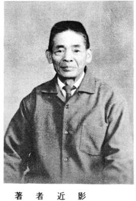
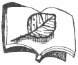
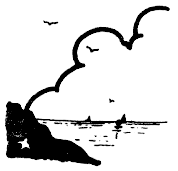
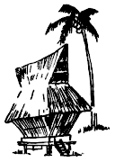
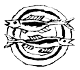

| 反戦大東亜戦争記録 | |
| 花里 戍 | |
| Naoki Nakajo (2016) | |


私がこの本を書く事に心をきめた動機は、戦後四十年を振りかえり第四十回の十二月八日である。それは昭和五十五年十二月八日、此
の日の或る新聞の見出しに一際大きく反戦運動と出ていた記事に目が止った時からである。反戦とは、昭和二十一年十一月三日公布昭和二十二年五月三日施行の日本国憲法第二章に戦争放棄と出ている。
第九条 日本国民は、正義と秩序を基調とする国際平和を誠実に希求し、国権の発動たる戦争と、武力による威嚇又は武力行使は国際紛争を解決する手段としては永久にこれを放棄する。前項の目的を達するため、陸海空軍その他の戦力は、これを保持しない。国の交戦権はこれを認めない。
今、日本の主脳者指導者の人々に右の憲法の趣意を思い起こしていただき、日本外交を間違わざる様切に願いたいものである。日本の国に反戦論者は数多くいる事は勿論ですが、四十年後の反戦は全世界に広がり、第二次石油ショック以来、今日ではヨーロッパの主要諸国にまで進出した日本メーカーの自動車に至るまで、すべての物が皆反戦につながりをもっているのである。今、日本国外交とアメリカ外交の間では、日本に対して大きく防衛力増強を要求している。二月には大来政府代表を、三月には外相を、四月には通産相を訪米させる。外交と一口にはいえないだろうが、どうしてアメリカへ月々日本の主脳者を送らねばならないのか、更には五月に入って七、八の両日鈴木首相の訪米も決定している。日本外交の正念場を問うに、アメリカの外交を呑む様な結果が生じるような事があれば日本国に取って非常に危険であるといわざるをえない。防衛力増強の裏には極東地域での肩代わりがある事を忘れないでほしい。と共に日本が新たな責任を負うようなことは絶対に避けなければならない。
昭和五十五年十二月八日、今日は戦後第四十回目の十二月八日である。いうまでも無くあの恐ろしかった太平洋戦争突入の日である。今、自分は新たな戦前を思わせる最近の改憲論、軍事大国化への傾斜、これ等を阻止するための集会等が今年は例年以上に各地で開かれてきた。
『大本営陸海軍部発表、帝国陸海軍は本八日未明西太平洋上において米英軍と戦斗状態に入る。』 昭和十六年、此の日朝六時ラジオの臨時ニュースがこう伝えた時、我が国民はついに来るべき時が来たとの感概にうたれ驚いた。最初の驚きもつかの間、其
の後次々に発表された詔勅や声明や戦果発表によって次第に国民は興奮へ、やがて熱狂のうずへ引込まれていった。勿論、我国の開戦に踏みきった指導者たちに自信や見通しがあったわけではない。清水の舞台から飛びおりるような「一か八か」の投機的心理しかなかった。東条首相のもとで内閣書記官長をしていた星野直樹はこの日、心境を先々の見通しの無い不安で足の下の地べたがすべっていくような、なんともいえないうつろな寂しさを覚えたとつづっている。言論の自由が無くなり徹底した情報統制のもとで真実が何一つ知らされず、しかも滅私奉公尽忠報国の教育をたたき込まれた国民が、時の政府に見事なまでに騙されたのは全くやむを得ざることだった。日本の敗北や無謀性を感じとってもそれを口にすると非国民と呼ばわれ、治安維持法によって拘束された。国の経済体制など大きな器が軍事体制と化し、一個の巨岩と成って急坂を転がり落ちる時、それを元へ戻すのがいかに至難かを先の大戦は教えている。世界第一次大戦争であった。
「まさかまさか」といってる間に、既成事実がなしくずし的に重ねられ、気が付いた時には限界点に達していたという「轍」を、断じて繰り返してはならない。三十六年前、日の本に戦争へと若人をかり立てた指導者たちは、原爆という恐ろしい怪物を知らなかった。我等は長崎、広島の二の舞を地球上に降らせてはならないと心にちかう。
昭和六年六月一日、現役編入。
昭和六年六月三十一日、横須賀海兵団に入団海軍四等水兵ヲ命ズ。
昭和六年十一月十五日、海軍三等水兵日進乗組ヲ命ズ。
昭和七年三月三十一日、軍艦八雲乗組ヲ命ズ。
四月、横須賀出港、勃海湾警備、七月初旬マデ。
昭和七年七月二十五日、棒名乗組ヲ命ズ。呉軍港廻送、軍艦棒名の艦尾大改造ヲ行フ。
昭和八年五月一日、海軍二等水兵ヲ命ズ。
昭和八年五月二十四日、長門乗組ヲ命ズ。
大演習並びに昭和八年、大観艦式、横浜港々外と千葉県木更津沖デ行フ。
昭和九年四月二十三日、帰休予定者トシテ横須賀海兵団ニ入団ヲ命ズ。
昭和九年五月二十一日、海軍一等水兵ヲ命ズ。
昭和九年五月三十一日、現役満期帰郷ヲ命ズ。
昭和六年、乃至九年、事変ニ功績アリ、腸金三十五円ト従軍記章ヲ授与ス。
私が海軍々人として、横須賀海兵団に入ったのは昭和六年六月三十日で、其 の日から海軍々人としての教育が始められたのです。先ず庭から素裸にされて、一通りの兵隊検査と同じ入隊検査を受け、合格者は何兵舎、何中隊、何班ときまる。それから団内被服庫に行って、自分の身体に合わせ頭の頂上から足の先までの被服を貸与えられるを受取る。軍靴二足、沓下 八足、夏冬無し。褌四、作業衣上下を二組、夏冬無し。ずぼん下二枚、襦袢夏二枚、冬二枚、煙下服一枚、軍服冬衣上下二組、軍服夏衣上下二組、軍帽子二つ、ペンネーム二枚、襟飾二枚、衣嚢 袋一、手箱一、手箱の中味（スズリ、スミ、フデ、便箋、封筒、鋏、モメン糸自黒、針二本、受渡済のパンフレット一枚、外套一、雨衣一）以上の受取品をパンフレットたよりに全部衣嚢袋に入れて、かついで中隊に帰って来た。一班の人員は十五人に班長一人、脚絆 に二通り巻、脚絆一、コハデ付の布脚絆一、自分は第二十七中隊第三班、中隊には各班の班長が待ち受けていた。十五人そろった処で、班長の指示に従う。先ず班長の挨拶。班員の自己紹介。終って食事当番が二人ずつ順番にきめられ、食器消毒室にはあさ編袋に真新らしい食器十六人分が箸と共に消毒されて食器棚に整頓よくならべられていた。当番が其のわきにあるやかんにお湯を一杯つめて、食器と共に持って中隊の班に帰り、もう一人の配膳に飯取りに行った者が来るまで待つ。あくまでも食事当番は二人、班長が世話を口できいて配食、一人は飯とおかず、一人は汁と湯呑にお湯をつぐ。此 の場合、気を付ける事は、あくまでも平均に盛り付けて箸をわたされて班長のいたゞきますの号令でたべる。飯の盛付終った時に当番の一人は飯なべにたべ終った食器の洗水を汲んできておき、たべ終った食器を其のなべの中で洗う。洗い終った食器は、あみ袋に箸と共に入れる。此の場合、箸袋は別にあり布きんも用意されている。当番の一人は食器を消毒室へ、もう一人は洗い場でなべを洗い、配膳室におさめて帰る。食前に被服庫から帰った時、一番先に班長に着せてもらうのが事業服、上から下まで白一色。黒いのは帽子と靴だけ、休憩。第一番に来た号令、次に甲板掃除、その次が作業始め、聞きなれない号令である。研長の指示にて午後は被服整理、家庭通信の時間である。被服庫から貸与された全部に中隊、班名、自分の名前を書き入れる。時間約二時間、手箱からすずり、筆を出して被服の名前欄に書き入れる。半分も書けないうちに家庭通信の時間に変わる。被服一切を一まず片付けて、家庭に対して手紙を書く。書く文句はおしえてくれる。本日無事入団一切の自分が身につけて来たものは、まとめて送る。身に付ける被服は一切が貸与されて、今自分は着代えて心身は新た、今日からは御国の為につくすのみ終り。休憩五分間、いそがしくて煙草を吸う時間も無かったが、酒保から買ったホマレ二十本入が箱半分もつぶれていたが、一本の吸い味はなんとも書き現わす事は出来無い。忙しさにおわれていたのである。休憩後、被服に名前を書き入れる時間も無く甲板掃除、つづいて食事五分前、聞いた事のある号令第二回目であった。一切を片付けて、これが軍隊である事は日が過ぎるに従って分かる。
今日は、横須賀鎮守府司令長官の訓示閲兵式である。午前九時三十分始められた。勅語我が国の軍隊は、世々天皇の統率し給うところにぞある。此の勅語の半ば頃、倒れる人が数多く出た。式は午前中に終った。後が大変であった。倒れた兵隊を中隊の中にはこんで板の間にならべてねせた。日射の為とのこと、黒い帽子に今日は真白なおおいをかけて、天皇面会の服装である。二、三百人の白鳥の湖とは一寸違う、真夏の太陽が直射日光を千五百人の白鳥の背中に射す。目も口も開いていられない。直立不動の姿勢。だらだらと油汗が流れた。今日午前中の閲兵式であった。軍人軍隊だからこそ、こんな教育訓練にたえなければと自分に言い聞かせた。午後からの徒歩訓練は基礎が大切と教わる。縦隊の組み方、横隊の組み方、行進は歩調取れ、一列、二列、四列、斜右、斜左、駈足、並足、こんな訓練が明けても暮れても毎日続く。十日も過ぎた頃、誰もが口にする太腿が張って便所に行ってもかがむ事が出来なく、千五百人の皆がつらい思いで泣いた。自分も其の中の一人であったのだ。この訓練が一ヶ月以上も続いた。今日からは、銃隊訓練を行う。銃隊とは、服装は今までと変わりはないが、腰に剣を付けて銃を肩に担ぐ。帽子の顎紐を掛ける。外に出て整列、番号、なおれ。これから剣の付け方、銃の担い方を教える。形をなおされて、是
から練兵場に向う。右向右、駈足前へ、我等には前進あるのみ。練兵場ではいきなり訓練に各班長がまるでしめし合わせた如く、まるで自分等には次が次が何であるのか先は真暗、こんな時でも心の内に常にあるもの故郷を思い出す事だ。それは父や母ではない。又、親戚でも無かった。只自分であった。
両親のいる家庭で、お百姓の手伝い位でなまっていた身体に今日の訓練は誠に厳しいものである。泣いたって、又助けを求めてもどうにもならない。自殺者の出るのも当然と思われた。来る日も又来る日も自分等には同じ訓練が行われた。こうなると教える者も人間おそわる者も人間。只教師と生徒の違いがあるだけ。こんな厳しい訓練の期間の中に一週間に一回、二時間の洗濯日があり、月に一回の被服検査と月例検査が行われる。月例検査とは、身体検査、特に陰部の検査は厳しいが厳しい事ばかりではない。一週間の中の日曜日、此の日は外出許可日である。外出といっても班長引率の下に弁当持参。此の弁当は日曜日の昼食当番の人が用意する。朝食後、飯場に行って飯とおかずをもらって来て班で弁当箱に詰める。水筒にお湯を一杯詰めて中隊に用意してある鞄、小ブックに入れて用意は出来上り。兵舎前の練兵場に整列、今日は一個中隊全員、中隊長小山中尉以下百六十二名。目的地は陸軍野外射撃場見学と衣笠公園、此処で昼食、見おろす横須賀軍港の景観は軍艦、巡洋艦、駆遂艦、一段と大きく見えるのが当時の航空母艦赤城であった。其の他、数々の船舶が横須賀軍港を埋め立てていた。帰団後、着がえるのも忙しく次の号令が待っていた。甲板掃除、食事五分前、この食事五分前の号令が聞こえると中隊各班の食事当番の者は駈足で、一人は食器取りとお湯くみに、一人は飯の配膳室前に駆け寄る。此れも皆訓練であるが、早いのは何時でも早く来ている。夕食後、甲板掃除も終って一寸の休憩時間に煙草盆に出て見る。皆戦友が楽しそうに煙草を吸っている。あすの艦砲訓練を思いやりながら一本のホマレを吸い終って中隊の自分の班に帰ってみると、我が身近な戦友は思い思いに、日記を書く人、手紙を書いている友もいる。又、渡された諸訓練読本を勉強している友もいる。やがて釣床
おろし五分前の号令が掛かる。班員皆で食事用、テイブル用の大机を頭の上の机棚に上げ終る。釣床下せの号令と共にその忙しい事。釣床かかり二人が釣床格納庫から投げおろすくらい早いのを一本ずつ受け取って、駈足で自分の班の処に班の人名の合った処に其の人の釣床をおく。やがて総員釣床おろせの第二回目の号令がかかる。ここで一寸釣床の説明をしておきましょう。釣床とは、我等海軍々人の寝床です。麻布で巾四尺、長さ六尺、此の布の長い方に二寸位の穴間をあけて二十本。布の前後につり
二つ、前に十本、後に十本、先に二十本と書いてある事、一本の釣紐は三尺五寸、これを二つ折にして釣
に掛ける。一本を二つ折りにしたから十本が二十本となった。後は穴にとうしてとめむすび、釣床は出来上り。中味はワラ布団一枚、毛布四枚、下二枚、上二枚、枕は着ていた、事業服の上下、四角にたゝんだもの、消灯喇叭
が鳴って電灯が全部消され眠る。朝の起床喇叭、総員起こし五分前まではみなぐっすりで一人も眼を覚ます者もない。総員起こし釣床納めの号令が掛かる。皆一斉にとび起きて釣床をくゝる。こんな事も海軍々人としてこの海兵団に入ったからこそ朝晩出来る訓練である。さて今日は、又又新しい訓練である。千曲艦日露の日本海戦には軍艦千曲で大分働いたとの名ある軍艦だが、今は海兵団練兵場のわきに係留の身である。甲板上に二基の訓練用の砲台が出来ていて、早速班長指揮のもとに訓練がはじめられた。十五サンチ砲、はじめて見る大砲で打ち方等は分るはずがない。はじめて見て、はじめてその大砲の打ち方操作、分るはずがない。教える班長も又教わる我等も共に死力を尽くして操作し、訓練に訓練を重ねて第一日の艦砲十五サンチ砲の操作訓練は終った。こゝで十五サンチ砲の説明をしておきましょう。砲身の長さ四米、口径が十五サンチ米、弾丸の重さ十四貫、火薬嚢
の重さ七貫、砲員数は番長以下十五人。この十六人が一丸となって大砲操作が完全に出来れば十五サンチ砲は発射することが可能となる。後に私自身、この十五サンチ砲を実際に発射した経験を書く事になる。それは昭和八年五月軍艦長門に乗艦を命ゼラレタ後の事である。無我夢中で過ごしている間に六ヶ月間の新兵教育は終った。
十一月十五日、今日は乗艦日、生まれてはじめて軍艦と名の付いている船に上艦したのだ。軍艦日進、先ず第一番に帽子のペンネームを横須賀海兵団と取りかえる。甲板士官の案内で必要範囲内の見学を終り。各分隊に配属され、自己紹介をして第五分隊第三班の一員となった。見る物、聞くもの又今日からは一年生である。先ず日常着る作業服、左ポケットの上に第五分隊、第三班、花里戍の名前の上に三水と墨字で布切れに書いて針で縫い付ける。同じ班の上級の人々を見習う。一水、二水、自分は花里三水となる。これが海軍々人の階級である。次に海上軍艦の日課表を書こう。朝の起床は海兵団の時と全く同じ。苦労の処へは若い兵隊が廻り動く。当然である。総員起こし十五分前。総員起こし五分前。総員起こし。釣床納め、甲板掃除、休憩、甲板整列、点呼、甲板洗い。この甲板洗いに付いて説明しておく。海軍にオスタップといって、かねで出来た洗い桶、大中小の三通りがあって、各分隊に二組、大には水二斗五升位入る。中には二斗、小には一斗五升位の水がはいる。甲板洗いには全部を使う。各分隊毎に受持区域が出来ていて、その受持区域だけを洗うのだが洗い方がある。甲板洗いの号令が掛かった時、全員が沓下をぬいで素足になり、ズボンのすそを高々とまくり上げる。動力で海水をオスタップに汲みあげる。上級の兵隊が柄バケで上甲板上に水を流し、若い兵隊が一列にならんで腰をおとし、両手で手バケをにぎり、前にはう様な恰好で海水でぬれた甲板上を前へ前への号令でこすり洗う。向うに着くと廻れで号令と共に帰りをこすり洗う。水でながして雑巾で洗うときの要領で前へ前へとふいて行く。すっかり海水をふき取って甲板洗いは終る。真水で足を洗って靴をはき、道具を片付けて洗顔、休憩、朝食五分前の号令が掛かる。食事当番は我等若い人の受持ち、朝食後休憩、甲板掃除、金 具手入、作業始め五分前、整列、午前の作業が開始される。船の中にも色々の作業がある。三等水兵の自分が一番先に習い教わった作業に紐 結びがある。三十二種類、一結び、二結び、掛結び、本結び、とっくり結び等々皆覚えるまでには数日を要した。軍艦には、海上交通に使用する小船が色々と積み込まれている。通舟、水雷艇、カッター、カッターとはボートの名前である。此等小舟の操作訓練は海兵団で、新兵教育中に一通りは自分等も受けている。
昭和七年三月三十一日、軍艦八雲乗り組みを命ぜられ、四月一日命令勃海湾警備、横須賀出港、自分にとって初航海、戦 斗 準 備 軍艦が軍港を出る時、艦長より必ず出される命令である。俄 かに艦内が忙しく、全員戦斗準備体勢に入る。戦斗準備体勢、始めて聞く命令であって何をどうすればよいのか見当がつかない。只上級兵の後に付いて手伝いをしただけ。出港準備、これ又分らない命令であった。何時の間にやら身体の重心が右に左にゆれていた。艦 は横須賀軍港を出港して、海上を南西に向けて走っている。東京湾の入口に、其の名も知られた観音崎燈台がある。燈台というのは、海上を航行する舟舶は勿論海難事故等に役立つ舟守りである。我が軍艦は観音崎をはるか南沖合に出て向きを西に相模湾沖、駿河湾沖、御前崎燈台を右に見るころ船酔を感じていた。日も何時しかどっぶり暮れて夜の航海に入る。夜の見張員は特に見張りを厳重にせよ、の号令が艦内に響く。波のしぶきが音高く、軍艦は西へ西へと走りつづける。遠州灘は一段と波も高かったが夜のうちに通り過ぎ、夜も白々と明ける頃、軍艦は遠く伊勢湾沖を更に西に向って走り続けていた。艦内の暖気と船酔で食事も喉を通らず、胸にあるものは外に出るだけ、船酔の苦しさ、切なさをいやという程感じさせられた。一日走って、鳴門海峡に入る頃夜に入っていた。淡路島の南に入って海は静かに軍艦の揺ぎもおさまり、内海の夜の眺め、景色の美しさは我が身体の船酔いを大分やわらげて呉 れた。瀬戸内海の一夜を軍艦は走り続けて正午頃、我が軍艦は呉軍港に入港した。早速上陸が許可されて、見る呉軍港の町もあるくのは始めて、船乗りの船酔いは陸に上がればすぐなおる。何時の間にやら自分の船酔いもさめていた。急に腹がすいて食欲が出て来た。下士官兵集会所に行って先ず食事をたべ終った。身体が自分でも分る位疲労しているので身体を休めてから軍艦に帰る事にして、何処にも出ずに集会所にて身体をやすめた。許された時間も残り少なくなったので波止場にいそぐ。迎えの舟が波止場桟橋に来たので乗せてもらって軍艦八雲に帰った。今日上陸できなかった人達が夕食の仕度をして、我々若い者のために夕食を取って残しておいてくれたのでそれをいただいた。今夜の釣床は航海以来、横須賀を出港して三日目のゆっくりした寝床となった。総員起こしまでぐっすりとやすんだ。今日一日は元気を取りもどした身体で艦内作業に励み、明日は又、戦斗準備を整えて目的地に向って軍艦は呉軍港を出港するのだ。其の日が来た。横須賀を出港して四日目、呉軍港を出た。宮島を右に見て内海を今日一日位、走らなければ関門海峡には入らない。内海の海は静かである。艦上から見る周囲の景色は、また何にもたとえ様もない美しさ。艦の戦斗警備態勢は横須賀を出港時と変わらない。見張り戦斗訓練は交体交体で行われている。ここで戦斗訓練に就いて説明しておきましょう。戦斗とは、外敵に対してたたかい、たたかうこと。訓練とは、色々ありますが此処では軍人に対し、外敵をあくまで一人残さぬ厳しい銃砲の扱い方、手入れを日常怠らず行う事です。軍艦は関門海峡を進み関門を出て一路日本海に向う。日はとっぷり暮れて夜に入っていった。壱岐、対馬を過ぎて舷海灘。音に聞こえた荒海、軍艦でも荒波を静かに乗切る事は出来ない。船舶は常に波に対処しなければならない。波には、うねり波、暴風雨波、高波、三角波、サザ波。海には平常という波はない。波が静かだった、波が高かったと話の上では聞いた。
愈々 舷海灘に出た。荒波と聞いていたが始めて出合った。此の船乗りで経験、体験、血へどまで吐いて此の航海に対処しなければならないのか。幾多我々の先輩が体験、経験を経て、現在の日本に強き海軍々人が数多くいるのだ。今日も又、東支那海大陸だなにフイリッピン、セレべス近海に太平洋の各島々に我が戦友も同じ心持ちで戦いつづけている事を思えば、自分の体験、経験もその一部であるのでは、と何時も自分の心に言い聞かせ精進あるのみ。夜は明けて我が軍艦は朝鮮海峡に進んでいた。旅順港外に仮泊、陸戦隊用意。又、聞いた事の無い命令がかゝった。第一種軍服に白脚絆を穿く、これが陵戦隊用意である。このほかに武装陸戦隊用意の命令がある。旅順では日露の戦蹟見学、白頭山忠霊塔参拝。白頭山から見下す旅順港の敵要塞は説明だけに終って下山。庭に一本なつめの木で有名なステッセル将軍と乃木大将の会見した庭を見て、又、有名な二百三高地に登り、当時の戦蹟を思いやり、二人の我が子、それぞれの戦死跡に仮の墓石が立てられてあった。見学終って旅順で一泊、次の日は大連に向う。大連でも上陸が許されて一日大連の市内を見学、市の中央に大広場があり、日本人町も有って日本人集会場も出来ていた。満州事変勃発時、この集会場周辺も警戒体制がひかれ、一時は緊張の時もあったよし。大連では入湯も一泊もなく上陸員全員が、帰艦時間には全員が帰艦した。一日おいて次の日に大連仮泊地を出港して一路上海青島 に向った。上海には寄港せず、青島に夜に入ってから寄港、仮泊した。此処はもう事変地であって、我が軍艦の警備区域である。一段と警備体制を固めて次の命令を待つ。上海青島の夜は約一時間の時差もって夜が明ける。青島の港周辺は艦から見るかぎり、緑の中にトタンの赤屋根、点々としていて又美しい。今日は青島上陸が許可されて午前十時、自分等もカッターで桟橋に着き上陸をした。日本を離れて旅順大連に上陸しても外国に来たのだ等の印象はなかったが、此処青島は一寸違う様に思われた。先ず青島神社に参拝、高台から見下す青島港 の周辺は緑と赤でまた美しさも一段と変わって見えた。市内見学では日本人集会場にて満州事変勃発時の説明をきいた。当時は所々にゲリラの出没もあって、陸軍の兵隊が暫くの間警戒が厳しかったが今は平常である。とのよし、次は青島市日本人小学校に行って見たが驚いた。今まで日本の国では全く見られない立派な学校である。二階建て校舎が二棟、管理棟一棟、学生に対する諸設備は当時の近代的。一寸、自分等には考えられない立派な物がそろえられていた。校庭も広くテニスコートまであった。帰艦時刻までにはまだ時間は残っていたが、市内の様子も知らない我等海軍々人がまよっているわけにもいかないので、もときた道を青島港に向って帰ってきた。すこしでも時間があると新しい色々の事、例えば此の初航海で横須賀出港以来、自分が艦上で行ったすべての行動は食事を除いては全部が新しい体験経験である事は勿論で、だが此れから先はまるで分らない。また明日からは新世界が開かれて行くだろう。桟橋にカッターが迎えに来たので皆乗り込んでカイを揃えて軍艦に帰った。軍艦船舶には普通玄梯といっ て、船に人が乗り降りする梯子がある。一口にいって船の玄関口になるものです。どの船、軍艦であっても必ず左舷の後尾中甲板にある。艦が停泊の時は何時でも水面一米の線まで下し、航海の時は出港前に甲板と水平まで引上げ固定される。軍艦には、まだまだ沢山の勤務上、作業上の一般の人の知らない事が多いのです。これから書く記事の中に折々に入れて行きましょう。軍艦は青島の港を出港して勃海湾中央目標に航行を続けている。黄海、朝鮮側ではソウル、ピョンヤン、中国と境の黄緑江、中国側では天津、北京、瀋陽、中国の大河、黄河の流れと黄緑江が共に勃海に流れ込み、海は黄色い海である。艦は湾の中央から北に向かって進み、翌明方に警備本拠である目的地点に錨を下した。五月に入った。或日上陸の許可が出た。今日は何処に行くのか、艦長采配の上陸は軍機密に依り、命令号令に従い行動するのみ。これが戦地行動である。軍艦からはカッターに分乗した兵員が陸地近くの仮桟橋でおりる。全員整列番号、これから四列縦隊で右に向って進む、右向け右、前へ進め、約一時間計り。前方に雄大といえる長蛇。是が中国とモンゴールに連なる国境に出来た万里の長城。
万里の長城、今自分等が警備中の勃海湾の海中の中から遠々六百里第一関を見学した。長蛇をまたいで小さなお城といったもの。周囲は全部レンガ作り、長城も又、東西は両面が全部レンガ積みで、其の下は人が突き当ってはあるきして人道に成っていた。しかし、第一関門は其の下が交通道に成っていて人も馬車も歩いていた。西を見ても東を見ても広野というか荒野というか其の広大さには一寸驚きでした。其のど真中に遠々長蛇の長城、向うの山すそから高い山の尾根を通って空まで続いていた。帰りには途中から珍らしい箱汽車に乗せられた。全部が板張り、二輌連結の小型の汽車であった。桟橋の近くまで乗せてもらって降ろされた。近くには人家らしきものもなく、ただ広野だけが見渡すかぎり続いていた。全員乗舟、迎えのカッターに分乗してかいを揃えて軍艦八雲に帰った。艦では何時でも戦斗配置、半数が上陸しても半数の兵員は艦に残り交替交替で戦斗配置に付いている。これが当直、非番で制度が守られている。兵員の艦内勤務は毎日時間的寸分の狂いがなく繰り返されている。ここで、艦内衛兵に付いて説明しておきましょう。組織は後甲板に指揮所があって指揮官に甲板士官一人、衛兵伍長に下士官一人、兵員は五人、合計七人で組織され、配置は中甲板の中央に一人、前甲板に一人、後甲板に一人、下甲板の前に一人、後に一人、夜昼二時間交替で艦内の命令号令は全部伝達する。これが衛兵の勤務、この外に艦が停泊中に梯門に立つ番兵がいる。以上の衛兵組織は戦時、平時、航海中何時でも勤務に付いている。軍艦の艦橋には艦長、副艦長、航海長、副航海長、中央に舵取の舵手、両舷の見張所には右に一人、左に一人、艦橋の下に通信室があって通信士一人、信号所には喇叭手一人、以上が艦橋勤務の人で有る。機関関係の人は下甲板より下、機関長一人、副機関長一人、機関兵数人が勤務している。軍艦にはどの様な兵員が乗り組んでいるのか、先ず兵種とは兵員の種類の事です。先ず水兵、この種の兵員がどの艦に行って見ても一番多いでしょう。それは受持つ銃砲が一番多いからです。次は機関兵です。主として機関、機械、電気等です。次は水雷、通信、信号と沢山あります。以上の兵員が命令一つで全員協力すれば戦斗も可能となり出港入港も出来るのです。六月に入って上陸、見学の許可が出た。見学場所は分らない。艦からカッターで出掛けたが途中で急に波が高くなり、皆びしょぬれに成って目的地点に上陸が出来た。此処は家が点々としてあり、中央に日本人小学校があった。建物は古いが二階建の校舎であった。校長先生一人、生徒数十五人、二年生から六年生。家族はほとんど炭鉱勤務、戸数は約三十戸あるとのよし。今日は小学校全体と兵隊との運動会、先ず校長先生と我が艦長とのかけっこから始められた。声と拍手がとぶ。次は兵士と生徒と組んで二人三脚、兵士と生徒のかけっこ、次は梯子ぬけの障害物競走と色々の競技があって、最後に兵隊と生徒の綱引きをもって今日の目的であった居留民慰問は無事終った。軍艦へ帰りのボートは波も来る時ほど高くなく艦 へ帰り着いた。勃海湾の北にコンロン山といって高く険しく雄大といえる山がある。湾内波静かな時は、その雄大な姿をうつし出してくれて兵員の心の慰めになった事と思われる。七月愈々 、警備任務も解除になって横須賀に帰港する事に成った。帰りは勃海湾を出港して佐世保軍港に直行であった。海上の船酔も少しはなれて勤務上にも作業上にも大変プラスであった。佐世保では勤務上、自分は上陸出来なかったが、反上陸員は一日楽しく休養が取れた事と思われる。佐世保を出港して横須賀に直行、来る時は内海を航行で波おだやかであった。今は外海太平洋上である。荒海で波は高いと思っていた。勿論そのとうりであった。身体の体験した上の順 は此の荒波も乗り切って横須賀に帰った。戦斗準備解除、艦内の働務は平常に戻った。昭和七年七月十日頃であった。
昭和七年七月二十五日命令が来た。軍艦榛名乗組を命ず。当時、軍艦榛名は次の戦斗に備える為、大改造を行う予定に成っていた。七月の内に横須賀を出港して呉に向った。軍艦榛名は前に乗っていた軍艦八雲の二倍の大きさがあった。まるで五軒長屋からビルディングに行った様な感じであった。艦が大きいだけに勤務に付いては規模が拡大されていた。従って軍律軍規は一段と厳しく思われた。軍艦が大きいのと航海は横須賀に帰った計りで順 れもあって今度の航海は苦しまずに出来た。呉軍港は二回目、前に来た時は仮泊、今度はドック入り、ドックとは陸上は町、市内に通じている。海上も勿論、波止場、上陸地点には出られる。大型軍艦、大型船舶が入居して修理改造を行う修理工場である。自分等には想像も出来ない大規模な構造で出来ている。艦内は最も静かに行動をする事、駈足は厳禁、海水を汲み出された。ドックの中は深く巾の広いものであった。艦を中央に左右は角材でささえられ、こんな光景を見るのも私には始めてであった。人生航路、誰にも経験の出来る事ではない。私が海軍々人として軍籍に身をおき、今、軍人としての人生航路を走っているのだ。軍人の人生航路、一般では想像も出来ない航路である事は当然である。ドックの中には出来るだけ水をすてない事、でも軍艦では、やる事だけはきちんとやっている。朝の甲板洗いは毎日行われている。此の水の量は一体何処に行く、ドックの軍艦の下にたまる。多くたまればドック施設のポンプで外に汲み出してくれる。今、我々の勤務、それは平常予備勤務、こんな楽な兵隊の勤務もあるのかと思われる。きめられた二分の一、四分の一の外泊は自由に出来る。こんな中で平時の兵隊の訓練といえば柔術、相撲、剣術、スポーツ、自分等も当時相撲部員であったので今日は呉軍港予備艦上にいる。相撲部員との交歓相撲競技の日である。横須賀相撲と呉相撲、人気は上々であった。海軍々人相撲、当時横須賀、呉、佐世保軍港に鎮守府司令で東京日本相撲協会より幕内勇退の立派な相撲取りが海軍相撲教師として各三軍港の下士官兵集会所に所属して、海軍相撲部員に手を取っておしえている。我々も軍艦が軍港に予備艦として停泊している時は平時訓練として、毎日夕食後、集会所に相撲の稽古に上陸し、稽古して夜食を食して午後の九時帰艦する。これは三海軍々港とも共通した訓練である。今日の相撲競技は五分五分であったが、呉の相撲部員の大歓待で、或るカフェーで呑んで唄って帰艦した。それからは呉の相撲部員とはうちとけた心持で上陸毎に一丁こいなどと声を掛けられる様になった。当時、自分の相撲はまだ駈け出しでどうしても相手の方が強かった。軍艦改造の方は毎日陸上からの大グレンが地響きを立てて空高く畳十四丈敷位の鉄板を釣上げて軍艦へ運んでいる。艦内はどうか、勿論、蜂の巣を棒でつゝいたなんて易しいものではない。騒音が高過ぎて兵隊の整列命令号令は全部陸上で行った。そのことだけでも兵隊にとっては大変な一日の訓練である。こんな作業が毎日繰りかえされて其の年も暮れる。昭和八年正月、兵隊にとっては正月も二月も無く、毎日が軍律の中で規則正しい生活であった。漸く 春四月、軍艦の改造もほとんど終り、桜の花がチラホラする頃ドックを出て横須賀に帰港した。
昭和八年五月一日、海軍二等水兵ヲ命ズ。昭和八年五月二十四日、待望の軍艦長門に乗組を命ぜられた。海軍々人であるならば一度は乗って見たい憧れの軍艦長門。この年は大演習と大観艦式を控えて活気付いていた。第五分隊は二つあった。前五分隊、後 五分隊、軍艦の右が前五分隊で左が後五分隊、是は軍艦長門の副砲分隊、副砲とは十五センチ口径の大砲の事である。新兵教育の後半、軍艦千曲艦上で班長と共に死力をつくして一日の大砲操作訓練に励んだと今思い出される。配置配属もきまって自分は前五分隊第三班、従って第三番砲員である。上艦当日からすでに大砲操作訓練は始められていた。一つ心を引締めてと思っていた。夜の釣床下し後の甲板整列では今までに聞いた事も見た事も無い制裁が加えられていた。まるで拷問である。横つビンタ、往復ビンタは宵の口で、それも手でたたくのではなく皮のスリッパでたたかれた。先 ず精神棒、バット、ストッパー、皮のスリッパの様な兵隊ぜめの制裁道具がどの軍艦にもそなえられていた。当時の大軍艦とは、五艦七艦といって先ず軍艦長門を筆頭に陸奥榛名、山城比叡等々一軍艦に兵員数は千五百人から千六百人、此等の数の兵隊を命令という、二字におさめるにはどうしても数の多い制裁道具が必要に成ってくる。この制裁を艦長以下の少尉に至る上官といえる人はどのように見ているかまるで黙認である。階級は伊達や粋狂で付けているのでは無い。海軍士官養成の各学校にも制裁道具は全部そろっているからである。我々兵隊は三年でも五年でもこの制裁学校を卒業する事は出来ないが、士官で軍艦に配属に成って来る人はすでに卒業生であるのである。大演習、この事は今まで七年に一度しか行われなかった。三鎮守府日本海軍一かたまりの大演習である。大演習とは実戦である。訓練に訓練を重ね大演習は開始された。戦斗準備の出来た軍艦に第二回目の乗艦ではあるが、この度の軍艦長門乗り組みは一寸などと表現出来る事ではなく大違いである。大波をけ立てて軍艦長門は横須賀を出港した。大演習地帯我々には分らない。けれども海上又、海の広さは海を歩いた人でなければ分らない。この時はまだ海とは広いものだ位にしか思っていなかった。大演習、どこで行われるだろう。毎日、毎日の航海訓練が即大演習である事が分ったのは大演習最終日であった。只今より主砲四○糎砲を発 射する。手のあいている兵員は皆上甲板に集まれ。此の一声で上甲板に駆け上がる。渡された綿を二つにちぎって耳につめた。どんな発射音と艦のゆれがあるだろう。遂に四○糎砲が発射された。上官の少尉は発射された直後、打出された弾丸は見えると教えてくれたが、始めての我等には全くのチンプンカンプンであった。引続いて我等十五糎砲の発射訓練である。実戦、実戦と身体に打ち込まれた操作は身体が最も好く知っている。十五糎砲の実弾発射も各砲五発、三十門が一斉に命令一下標的に向って発射された。全艦胴震いした。ほんの数秒間であったが、我等砲員は汗でぬれていた。此の時、自分は三番砲員であった。三番砲員の操作は十四貫の弾丸を一度肩に担ぎ上げ、おろす時に両腕に抱えて砲口にあてがう。四番砲員が刺棒で弾受まで刺込む。五番砲員は、火薬のうを両腕に抱えて弾丸の後に右腕で刺込み、一番砲員が眉栓を閉じて眉栓に右手を掛けて打方用意は出来る。あとは引金ボタンヲ押すだけ。ほかの砲員には、どんな役目と操作があるか説明しておきましょう。砲身上下左右員、目盛盤読上員、砲旋回員、目標定め員、伝令員、弾丸運搬員三人、火薬運搬員三人、番長一人、合計十六人、十二糎七の大砲も人員は同数の十六人必要である。二十五糎、十三ミリ機銃は各々一人で操作が出来る。昭和八年七月、軍艦長門を先頭に全日本艦隊三百隻の大演習は終った。
引続いて大観艦式横浜港の埠頭に近い方から戦艦、航空母艦、第二列目、五百米間
をおいて、巡洋艦、大中又、五百米間をおいて駆逐艦大中小、間をおいて数多い三百の艦船舶が千葉県木更津沖まで兵隊の大きな役隊である。観艦式とは、全艦が満艦飾を行う事である。
満艦飾とは、艦の全体を盛装し飾り立てる事。女が美しく着飾る事、特に夜は色とりどりの電燈で飾り一週間をおく。艦全体の兵隊が上陸し交替で夜の満艦飾が見られる。入湯上陸が許可された。自分で作って自分も見、東京湾沿岸の人々は勿論、此の光景を楽しんだ事でしょう。満艦飾の中日、現天皇陸下は横浜税関桟橋に至り、軍艦差し廻しの司令長官迎えの水雷艇にて軍艦比叡に乗艦閲覧された。満艦飾も終り、各艦艇は三軍港に向けて帰港した事は勿論であった。昭和八年も観艦式で終った。
昭和九年四月二十三日、帰休予定者トシテ、横須賀海兵団ニ入団ヲ命ズ。
昭和九年五月二十一日、海軍一等水兵ヲ命ズ。
昭和九年五月三十一日、現役満期帰郷ヲ命ズ。
以上で現役時代は終ります。
軍隊、兵隊の生活記録、乞う。御判読のほどを。

三交代で会社勤務の自分には、会社から帰って戦時ニュウスを聞く時間はあまりなかった。毎日が自分本位の勤め人。会社では満州国の戦況等は、一度も自分の耳に聞く事は出来なかった。当時治安維持法は、此の満州国にも徹底していて、此の頃、軍事警察という憲兵隊が組織され、普通の警察は要がたせなくなった。強力な軍を盾に市中を大手を振り一寸した事にも割り込んで、うむを言わさず引立てる。市民に対して憲兵隊とは敵であるのか、味方であるのか。
天皇を神に祀り朕の命令という恐ろしい言葉が盛んに使われて、日本国中どんな山間僻地であっても竹槍軍事訓練が日々行われ、国の経済体制はすべて軍事体制と化し、物資の欠乏は日増に亡びて、食糧難にすべての国民は歯を食いしばって頑張った。ほしがりません勝つまでは。いつ何時果てるとも分からぬ此の戦争に、徹底した情報統制、真実が知らされず、滅私奉公、尽忠報国の教育に国民は時の政府に見事に騙されたのであったのだ。
昭和十六年九月九日、充員召集ヲ令セラレ応召、横須加海兵団ニ入団ス。
昭和十六年九月二十七日、加茂川丸乗組ヲ命ズ。昭和十六年十一月二十三日、仏印方面ニ向ケ高雄発事変地勤務命ゼラル。高雄は台湾南方基地。昭和十六年十二月八日、高雄帰着、大東亜戦争ニ入ル。昭和十六年十二月十三日、菲島
蘭印方面ニ向ケ高雄発戦地戦務甲。
昭和十七年二月十五日、蘭印海上ニテ、敵潜水艦ト交戦、我ガ艦大火災ヲ起シ
沈サレル。
昭和十七年三月十五日、横須賀海兵団ニ入団ヲ命ゼラレ、即日台東丸ニ乗船。第二小倉丸、広田丸三便乗。四月二日、呉軍港に帰着、呉海兵団ニ入団。昭和十七年五月一日、横須賀鎮守府第五特別陸戦隊附ヲ命ズ。五月十四日マデ作戦訓練ヲ受ケル。昭和十七年五月十五日、ぶらじる丸乗船、作戦地ニ向ケ横須賀発、ミッドウエー作戦ニ向ウ。
昭和十七年六月十六日、連合艦隊機密八○一番電ニ依リ北方部隊ニ派遣ヲ命ズ。あるぜんちな丸乗船、カナダ国アラスカ半島の南端キスカ島に到着港ニ入ル。アリューシャン方面作戦ニ従事。昭和十七年八月二十九日、北海支隊進駐軍援護作戦ニ従事ス。昭和十七年勅令第六百十一号ニ依リ海軍水兵長ヲ命ズ。昭和十七年九月三十日、第五警備隊付ヲ命ズ、援護作戦従事のまま昭和十八年七月二十九日鳴神発キスカ島徹退。昭和十八年八月一日、千島ノ占守島帰着上陸ス。昭和十八年八月五日、第五十一警備隊附ヲ命ズ。昭和十八年九月二十一日、横須賀第一海兵団ニ入団ヲ命ズ、即日雲洋丸便乗第一海兵団ニ着団。昭和十八年十一月一日、任海軍二等兵曹鎮司令。昭和十九年一月二十八日、第四軍需部附ヲ命ズ。昭和十九年一月二十九日、横須賀発千代田丸便乗南方作戦ノ為第四軍需部トラックニ向ウ。昭和十九年十一月一日、任海軍一等兵曹第四需。昭和十九年一月二十八日、自二十一年一月十日、第四軍需部戦務甲、昭和二十年九月一日、任海軍上等兵曹横鎮
司令昭和二十一年一月解員予定者横須賀復員収容部ニ向ケトラック発ＬＳＴニ便乗、一路南太平洋カロリン諸島ヲ経テ、セレべス、フイリッピンノ島々ヲ経テ台湾東部ヲ通リ、沖縄諸島ヲ経テ鹿古島諸列島カラ南太平洋上ヲ横須賀鎮守府浦賀復員局ニ向ケテ走リ。
昭和二十一年一月二十一日、浦賀ニ帰着、復員局収容部ニ入ル。
昭和二十一年一月二十三日、充員召集解除帰郷。字で書けば、三、四貢に過ぎないが、我等兵士に取って戦斗の長い年月は、死斗の世界であった。
世界大戦争勃発年記録
第一次世界大戦、大正三年ヨリ大正七年マデ。
満州事変勃発、昭和六年ヨリ。
上海事変勃発、昭和七年ヨリ。
日華事変勃発、昭和十二年ヨリ。
第二次世界大戦勃発、昭和十四年。
大東亜戦争勃発、昭和十六年十二月八日。
第二次世界大戦終決、昭和二十年八月十五日。
私が召集されて、赤紙が手許にとどいたのが昭和十六年八月二十八日、夜の八時半頃であった。当時私は、満州国鞍山市昭和製鋼所に勤務しておりました。其の夜は丁度二番出の第二小形工場で勤務中でありました。事務所からの知らせで早速事務所へ行ってみると、工場長は今社宅の奥さんから赤紙が来たので本人に知らせてくれとの事で君を呼んだのだ。ほかの事とは訳が違う早速休暇を許可するから、家に帰ってみなさいとの事で、家に帰って来た。「只今」と玄関を入って、家の中では妻の品子は部屋の中をあっちにいったり、こちらに来たり赤紙を手に、おちつきがなかった。己の処へも、来るものが来たのか。お上 はやっぱり己を忘れてはいなかったのだ。入隊は昭和十六年九月九日と書いてあった。寝よう、自分は仕事の疲れで其のまま眠った。妻は眠るどころではなかったらしい。それもそのはず、妻は今臨月、出産予定日が二十日頃であった。翌日は会社の兵事係に行って一切の手続きを取り、社宅掛りにも、家内や子供の事まで一切をお願いして、早速鞍山駅にとんだ。内地までの乗車券、駅では応召者に対しては乗車券は半額、裏には召の字の印をして、汽車に対する時間連絡等一切を教えてくれた。
其の夜会社関係の親しい友人、又特に関係のあった方々の送別の宴をはり翌日、鞍山駅より別れをつげて車中の人と成ったのは、昭和十六年九月一日午前八時でした。途中ソカトン駅で、朝鮮行に乗換えて、国境税関も、無事歌で有名な境の黄緑江を渡り、朝鮮平野に出た。ピヨンヤン、ソウルを経て、大韓民国に入る。此処も鉄道沿線は、見渡すかぎりの水田地帯の米所である。すでに稲穂は傾き始めていた。午後五時日も西に傾きかけた頃、釜山駅に到着。埠頭付近にはあらためて見るものも無く、夜の連絡船の船出までは時間があるので、何処かで夕食をと近くの食堂に入ってゆっくり夕食をたべた。七時半頃から上船が始まるので、食堂を出て埠頭桟橋の方へ行って見た。桟橋前には今夜乗り込む人々でにぎわっていた。やがて時間が来たので前の方から乗船がはじまった。自分も他の人々にまじって、乗船が出来た。此の連絡船も、今夜で四度二往復、鞍山市から最初に内地に帰ったのが昭和十四年四月、東京の桜はこの年チラホラ咲き始めていた。色々の事を考え思い浮べながら、ゴロリと横になって見たが、なかなか寝付かれない。波のしぶきで船舷 は音を立てて洗われていた。上甲板に出てみると、海風は一寸寒さを覚えた。対島の燈台がチラチラ見えてきた。夜中でもあるので少しでも眠ろうと下におりて来た。人々は皆横に成っていた。自分も人々の間に入って横になる。少しは眠っただろう。人々の明るくなった、夜が明けた等の声で目覚めて見ると、夜は全く明けていた。下ノ関に船は近付いている。鷗が餌をあさって、低空飛行を繰り返している。いよいよ下ノ関入港。船はとまった。下船だ。人々は先をあらそってはしる。東海道線名古屋東京行には時間があった。味噌汁におトウフ、白いおまんまで朝食を取った。第二日目の朝である。午前八時三十分東京行の急行に乗っていた。山口、広島、兵庫、京都、何回通って見ても、内海の眺めも又楽しい。滋賀に来て琵琶湖のあたりは夜に入り、一部しか眺める事は出来なかった。岐阜名古屋、中央線に乗り換える頃鞍山を出発して第三日目の明け方であった。中央線で木曽谷をはしっていると、いよいよ長野県今日は我が家に帰れる日等と、心に思いながら多治見、中津川、木曽谷で有名な寝覚ノ床、木曽福島、松本、篠ノ井までの汽車は大分疲れた。乗換えて信越線小諸で最後の乗換えして、岩村田駅に到着した時は、日はとっぷりと暮れていた。町で夕食を取り我が家に向って、トコトコと歩く。四十分位で我が家に到着。「只今」前以って報らせておいた帰郷だが何か家の中は物悲しい寂しさである。赤紙が来て、実兄が召集され、出征したのが四月の中旬である。満州国にいた私の処へは報せはなかったが。今また私の処へ赤紙が来て、満州国から帰郷近日出征、今戦地では日々戦斗は激しい勢で、戦死者の情報が身近かに、入って来ている時である。御国の為とはいいながら。一家の内から二人の出征兵士を送り出す父母の心境は、前にも書いたが、物悲しい寂しさであると思う。日にちも過ぎて、今日は横須賀に入団の為出発の朝である。父母をはじめ一同に別れを告げて、岩村田駅に向う。当時は滅私奉公、尽忠報国の教育で国民は治安維持法をおそれ、駅に見送る一人も無く、汽車の人と成って入隊地横須賀に向った。
同じ思いの出征兵士が、絶対という秘密の内にどんどん戦場に送られる時代であった。上野で乗換え東京で又乗り換えて横須賀に着いたのは午後四時であった。指定された旅館宿舎に行って見たが、まだ一人も来てはいなかった。暫らく休んで夕食の頃には、大勢の戦友が集まって来た。皆明日の入団の事で話がはずんでいる時、団内衛兵の一人が連絡に来た。色々の諸注意は皆さんが現役で入団する時と何等の変わりはありません。只入団時間の、午前九時を厳守して下さい。以上です。暫らく振りにと、横須賀の夜の町に出て見たが、統制物資生活で町並はあかりも暗く、森閑としていた。明日の入団が大切と旅館にかえった。大勢の人がいたが、現役時代の戦友は一人もいなかった。畳の上の布団も、今夜で終わり等とおもい乍 ら床に入った。明けて九日。今日は召集入団の自分には記念すべき日であると思う。朝食は宿と娑婆の軍律との別れのおまんまである。噛 〆て時間に遅れまいと、海兵団にいそぐ。時間に間にあって、入団する事が出来た。今日からは自分は軍人であって即軍隊生活に入るのであります。後は現役入団の時と同じで書く事をひかえます。結局当分の間第七兵舎に入る。すべての諸訓練は現役で入った後の訓練と変わりはなかった。入団後今日で約二十日、此の頃我等も上艦準備で特別訓練の最も忙しい時に、私の長男の出生の報が、第七兵舎第三班の花里戍の許にとどいた。思わず万歳。周囲にいた戦友が驚いた。どうしたどうしたと私の肩をたたく。話を聞いてどうしたがお芽出とうに変わった。一瞬の出来事であった。
昭和十六年九月二十七日、命令、今日は自分が軍艦に乗り組む日で有った。軍艦加茂川丸、後に南方で生死を分け合った船であったが、今は聞いた事も無い、見たのは今日が始めての船であった。半客船で七千屯級。上甲板に前後十五糎砲が二門、艦橋に機銃一門、これが軍艦に名を変えている訳である。入湯上陸が許可されたので、上陸、横須賀の陸上の一夜も今夜かぎりと思われた。翌朝帰艦して、出港準備。今日一日は明二十九日出港に当てた、最も忙しい一日であった。二十九日、戦斗準備も完了、艦は出港した。なんと船足のおそい船だろう。八ノット軍艦と名前のつく船では、最も船足ののろいぼろ船であった。艦長海軍大佐以下百三十五人、これが全乗組員であった。自分は後五分隊で、後甲板の十五糎大砲員であった。横須賀を出港した艦は南に向っている事は自分にも分かるが、何処に目的があって行くのかは、軍機密で自分等の知るところではない。二日もはしって入港準備の号令がかかる。此処はどこかと目をこらせば、現役時代半年も日月をかけて、軍艦榛名の大改造でドック入した呉軍港であった。一夜の仮泊で右舷の人は入湯上陸を許可された。翌日はすでに出港して更に南に向う。南へ南へと二日はしって第三軍港佐世保に入港した。此処では、左舷の人が入湯上陸を許可された。自分も上陸者の一人であった。現役の時も、上陸して歩いた佐世保であるが、十年過ぎた今日は、大分変わっていた。変わらぬ処は波止場からの海軍通りだけであった。下士官兵集会所で泊りの札を買う。一泊兵隊は五銭、下士官は十銭であった。買った札に寝台番号が入っている。町に出て歩いて見る。十年前の食堂は変わってはいなかったが、中で働いている人は皆変わっていた。麺類の好きな自分は月見うどんで夕食をすませた。食堂を出て港町を歩いて見た。変わった処といえば現役時代華やかだったカフエー射的街等はネオンサインは消されて街は暗かった。どこに行く当 もなく、下士官兵集会所に帰って来た。寝台番号をたしかめて床に入った。時間が早いのか、それともとなりの寝台は売れていないのか等と、思いをめぐらしているうちに眠りに入った。集会所の起床時は大体艦の起床時間と変わりはなかった。迎えのボートで艦に帰った。
主題の世界大戦争は、昭和十四年から始まっていたのです。陸軍では中国大陸から、南へ南へと進軍していた。海軍では南洋の赤道直下から北洋までの広範囲で、戦斗は毎日行われている。自分の乗り組んだ軍艦加茂川丸は、今日も佐世保出港以来南に向ってはしっている。鹿児島を離れて硫黄島、後に大戦の起きた処。屋久島、名瀬、鬼界島、軍機連絡の為鬼界島に派遣員三名、軍艦加茂川丸は一時仮泊、三時間にして連絡員は帰艦した。錨を上げて直ちに出港、南に向う。鬼界島で土産にもらったという青蜜柑二ツ分けてもらって食べたがとてもうまかった。軍艦は更に南に進んで日日 を重ね、沖縄に入港した。沖縄本島、始めて見る南の島、松の若葉を見るような緑の深さには目を見張らせるものがあった。此処でも一日上陸が許可されて、沖縄本島見学を行った。自分等が上陸した地点は外港桟橋で、ここから見る沖縄本島には、家らしき家は殆んど無かった。内港と外港を結ぶ箱汽車があり、皆なで乗って発車はしたが、急坂にかかると自然ストップ。皆なが降りて押し上げる。こんな事を二、三度繰りかえして内港駅に到着。此処には沖縄本庁舎もあって、庁舎通りはコンクリート道路が三百米位出来ていた。家らしき家もまばらにあった。住民は半農半漁で生計を立てている。作物は砂糖黍に薩摩薯。高台から見る四方の海は、島の近くが碧色で、沖は深いあい色でうねっていた。帰りも箱汽車で外港まで、迎えのボートに乗り込んで、かい先そろえて軍艦加茂川丸に帰艦した。翌朝早くに軍艦は沖縄外港を出港して更に南に向って走っている。どうやら我等の前進基地は台湾か等と胸算用して南へ走る事一週間。台湾の島影も見えて来た。今始めて身近かに見る台湾の島、是が地図で見た本当の島、薩摩薯島である。
島が見えてから、南へ丸一日走って始めての港高雄港で、ここは漁港であり名物バナナと砂糖の積出港である。台湾の南端の港で今後我が軍艦加茂川丸が更に南方赤道直下の広範囲に軍機密の下で任務遂行に果される戦斗は厳しい事と思われる。横須賀出港以来、高雄入港まで、約二十日位の日数は過ぎていた。此処台湾は十月も半ば過ぎというのに夏である。此れから十一月、十二月は日本東京の真夏に成るとのこと、急に暑い処に来たので、毎日毎日が汗だくであるが、命令下の服装は薄着にもなれず、一週間の洗濯日までは、其のままである。今日は上陸、台北の市都見学で、台南から台北へ台湾を縦断する一本汽車で、二時間以上片道かかる。此処台北には、丸山動物園があった。先ず最初に目についた動物は、まだ見た事もなかったチンパンジーであった。丸い高さ十尺位の鉄格子の中を人間と同じく立って鉄格子につかまりながら、歩きまわっていた。大きな動物では、とら、ひょう、熊、わに、とかげ、猪、大かめ、鳥では大わし、はげたか、小さなものも沢山飼育されていた。帰りの車上から、見た水牛、これも初めて見た大きな動物であった。中央の平坦地、農作物は色々あったが、大体は砂糖黍で一杯という感じであった。基地在港中は、四分ノ一外泊が許された。此処高雄の中央通りは商店街であった。我等兵隊の憩いの家、小規模ながら下士官兵集会所が出来ていた。先ず最初に目に入ったのが名物のバナナであった。集会所入口前に屋台が出来て皿盛りで、一皿が五銭十銭であった。めずらしかった。初めの頃は上陸するとこのバナナを第一番に買ったが、そのうちにあきた。この台湾ではこの外にザボンがあった。熱帯産のみかんの一種で大きいものは我等の頭位の大きさがあった。味は内地の小形蜜柑よりも大味であった。自分等も戦友と共に食した事が二、三度あった。十九年二十年の食糧難の時は南洋で出来る食産物は自分の手で作った事を後に書く事にしよう。
昭和十六年十一月二十三日軍機密命令仏印方面に向ケ高雄出港事変地勤務ヲ命ぜられ、高雄から更に南に向って軍艦は走っている。昼夜走りつづけて幾日か過ぎた時、島の近くで錨を下した。ここが何処であるのか只命令のまま、オシヨロ島であるというが見当はつかない。大陸棚である事丈 は分かる。上陸して見ると海辺にある家々の間は爆撃されて見るも無惨な有様でどこをあるいて見ても人間は一人もいなかった。大陸棚の山中に逃げ込んでいるだろうとの事であった。通りには色々の商店が有ったが身体丈の逃げである事が分かる。更に先に進軍し我等がオシヨロ島に入った頃は、当時世界で有名な石油源地帯、タラカン、バリックバパンの二地帯は見事に日本の爆撃にやられて、全山大火災を起こして一週間も燃えつづけた。この大火災は天をもこがす大きな火災で海をへだった遠方のオシヨロ島からも夜は海の空に映えて、見事というよりはなかった。これが戦争だ。今大戦に入って三年目、世界の大石油資源地も爆撃下にあって、一週間にして灰燼と化した焼野原。軍艦は南に進んで、今日は先に書いた爆撃下の焼野が原の見学を許可された日だ。陸戦隊用意、第二種軍装、後甲板整列、軍艦から下された二双のボートに分乗して第二桟橋から上陸。陸地には名も知らない南洋の木々が茂っていた。湾の奥に第一桟橋がある。此の辺の海岸地帯は敵の銃殺地で数多い敵兵の死体が波打際に横たわっていた。鼻持ちならぬ死臭であった。此の世の地獄を見た思いで身震いした。第二の見学場所は、捕虜収容所、男女混合で一兵舎に三百人位収容されていて、泣きわめいていた。是等の人々は、油源地帯の生き残りだと聞いたが、食糧が無ければ銃殺も考えられる由、是又地獄である。第三の見学場所は焼野が原の石油湧源地帯、広範な海岸地帯から見渡すかぎり一山、二山、三山越え、真黒焦げで目もあてられぬ光景であった。見学は終わって、艦に帰った。毎日毎日が目まぐるしい艦上戦争に、明け暮れしている自分等に振り返って見る余祐は無かった。今反省してみると、佐世保を出港して、現在地の仏領印度支那は遠い。此の間自分等が上陸許可、見学等で味わった場所、地帯等は、何等かの形で自分等より一歩先に、皆戦斗の行われた処である事が分かった。多くの戦友が、世界という大的 の中で皆戦っているのだ。軍艦加茂川丸も、更に南又出港しては南へと進む。ベトナム、カンボジア、ホーチミンからメコン川に入る。後にべトナム戦争でこのメコン川は死人でうまったという。この川を一日逆のぼって仮泊した。気温が高く暑さは今までに味わった事も無い暑さ、頭のてっぺんから靴の中までが汗でぐしょぬれ。こんな処にも多くの人が皆職業を持って住んでいる。一日上陸の許可をもらって、市街に出て見た。波止場近くには、大きな建物もあり、商店街も通りには有った。色々の人種が行き来していた。目に入ったのが真黒の黒人、半黒人、中国人、印度人、あいのこ、最も優しい服装をしたアンナン人、日本婦人と間違える位であった。日もくらむような酷暑、日中に成ると商店街は大戸をおろして、大通りは人も歩かない。自分等も木陰、家の陰等に入って見たが、酷暑は厳しく、何処にいてもいたたまれず、軍艦に帰って来た。
夜の当直で舷門外番兵に出て見たが暑さには変わりなかった。船酔いで油汗を流したが、酷暑でも流す汗がなくなると油汗がながれる。こんな体験を重ね、翌日は最大目的であった軍機密、暗号の送りも終わって軍艦はメコン川を下り、こんどは北上をつづける。二、三日、四、五日走ったが、暑さには変わりはなかった。幾日か過ぎて軍艦は、最も警戒を厳重に危険水域に入っていた。前方に島が見える。陸上から発火信号が我が軍艦に向けて発信されている事が分かった。この辺の水域には、水中地雷の敷設が多い。島に近付く事は指示に従うべし。最も安全な水域に入って錨を下す。上陸が許可されて、此の島に上がった。始めて目に入った植物それはサボテンである事が分かった。見上げるような大木で枝を張り扇のような葉には、五寸釘を思わせるするどいとげが生えていた。此の海南島の浜辺には、こんなサボテンが密生しているという。動物では錦蛇、とかげ、大鷲等が生息している。軍機密連絡もすんで、上陸員は全員帰艦、錨を上げて海南島出港、警戒水域を出て、東支那海を北に向う。航行中敵潜水艦の攻撃にあい、我が軍艦の後に魚形水雷の航跡二条発見す、との見張からの報告があった。幸いにして、敵攻撃の魚雷命中から脱して南進基地に向って走り続ける。
幾日か過ぎて、大任を無事果して南進基地高雄に帰港した。時に昭和十六年十二月八日であった。何も知らない我等兵隊は、皆自分の心の内に十一月二十三日基地出港以来、今日の入港まで今日は何日であるのか、又過ぎた昨日が何日であったのか、只無我夢中で命令号令に従って来た。其の中で自分の得た体験、経験みんなはじめての事であった。始めて見る大陸棚の沿岸、陸地に近い丈 に目に入るものが全部、毎日が新しい事であった。上陸して見学で見た物、此の世で全く見た事の無い物ばかりであった。沿岸近くの海中に帆柱だけ見えて沈没している船、半分沈んでいる物、前半分、後半分、皆爆撃で沈んだものと思われた。夕食時間も近く成った頃、軍艦の整備も出来て、皆夕食のテーブルに付いた。食事ラッパが鳴った直後、艦内放送で、本日午前五時大東亜戦争に入れり。次に我が日本潜航艇、ハワイ、アメリカ艦隊基地を大爆破せりとの放送に全員とび上がり、大歓声は我が軍艦も破れんばかりであった。第一戦の幸先よしと艦長を胴上げして、其の夜は無礼講、暑い台湾の、南端基地の艦上で、褌一本で時間の許す限り呑んだ。

昭和十六年十二月八日、此の日、東支那海、大陸棚から南下して、南はホウチミンの長い戦斗航海から、今日南進基地である高雄港に帰港して、大東亜戦争に入ると自分の耳にきかされた。いよいよ来るべき時が来たのである。出征以来二月半、この戦斗は又、長い旅路になるのではないかと思われた。
二、三日過ぎて戦斗準備、出港用意、錨を上げて南進基地の高雄を出港、南に向ったのが昭和十六年十二月十三日、菲島 蘭印方面に向け軍機密作戦遂行の為と言葉の上では分っても何処に行くのか分らない。命令号令のまま軍艦は南へ南へと走る。今迄の航海で天候の事は気にも止めた事は無かった。艦は只今より暴風雨圏内に入る。聞き馴れない号令が懸かった。同時に最初の大波は、我が軍艦の上甲板を洗い流した。
続いてローリング・ピッチング、軍艦はまるでもみくちゃにされ乍 ら浮いていた。右から被った大波も左から被った大波も上甲板から中甲板の我等の居住室に大滝となって凄まじい音を立てて流れ込む。一班十五人で食事をする大テーブルと大イスは、軍艦が右にたおれれば右に、左にたおれれば左に、居住室の中を遊泳していて近寄れない。兵員は皆、船酔いで号令では一寸動けない。通路のモンキ、ラッタルで重なり合って口もきけない有様。何たる試練の嵐なのか、海は相変わらず狂っている。こんな時、自分は不思議と船酔いも軽く、人々の世話をしながら見張りの任務があったので艦橋に昇って見て驚いた。硝子 越しに見る海上は、海巻上がる竜巻か、只大波を被っているのか外はさっばり見えない。艦は大きくゆれて波しぶきを受けて自力を失って波の間に間に任せるほかはなかった。艦橋に操舵員は操舵を握って前方を見詰めているが、大波のしぶきで何も見えない。自分も前方見張りで、頑張ったが何も見えない。夜に入ったが海の狂いは静まらない。勿論だれ一人眠る事は出来なかった。長い長い夜は明けて、第二日目海上の逆巻く波はおさまりそうにも無く、益々狂って今日一日も暮れた。此の台風雨、自然の試練、我が軍艦は此の試練に耐えて浮上を続けている。我等は青菜に塩、口から出る物もなく、船酔いで食欲は全く無く生きているのだ。こんな切ない苦しみが朝まで続いたが急にあの荒れ狂った海は全く静かになって、まるで狐につままれた思いで艦の内は生き返った心地で正気付いた。急に腹がすいた。居住室の大掃除もすんで、食卓のテーブルも並んだ。出た朝食はかんぱんであった。台風雨のため、艦の被害も甚大で飯場では水が無く飯食は出来なかったのです。艦橋に昇って見ると、空は晴れて太陽も顔を出して笑っているが如くであった。後に成って分った事であるが、此の静けさは台風の目である。自分等も自力を失った軍艦は自然に台風の目の中に入った事は確実であったのだ。艦を中心にして周囲二百キロか三百キロ、それより先はまるでどんよりと曇っていて先の水平線は全く望めなかった。其の夜の内に軍艦は又、台風暴風の中に引戻された。荒れ狂った波やしぶきは前と変わりなく、軍艦に遠慮会釈も無く乗り掛かって来た。木の葉の如くなどと話には聞いたが、そんな生易しいものでは無く、悪魔の仕業としか思いようがない。男度胸と腹をすえて此の荒波に耐えた。翌日は台風からはずれて青空の海に出た。恐ろしい台風雨の荒波に勝った。軍艦も又、自分も沈没をまぬがれたが、艦は健在とはいえなかった。
軍艦が生命とする帆柱はおられ、デリックは流され、羅針盤は不能となって現在地すら何処に位置しているのか、どちらが北か西をも分らず只波間に流されているに過ぎない。広い海上どちらを見張っても島影も一つも見えない。又、船影も見る事は出来なかった。時間的には午後に入った。右七○度水平線上にマストらしき物発見。自分で動けない我が軍艦は波間に漂う捨小舟、水平線上に見えたマストはだんだん形も大きく浮き上がって、発火信号の交換が出来るまでに成った。敵か味方か全員戦斗用意配置に付けの命令が降った。信号によって我が僚艦である事が判明した。ほっとして見守る中、段々と近付いてきた。間もなく僚艦に曳かれて基地に帰る事が出来た。一日間をおいて我が軍艦の修理も完全に出来あがって早速出港。又、南に向って艦は進んでいる。ここで我が軍艦加茂川丸は大東亜戦争で何をする船かを説明しておきましょう。基地移動という任務を与えられた軍艦です。基地移動といってもお分りにならないでしょう。軍艦には色々あります。戦争専門の軍艦に戦艦、巡洋艦、航空母艦、駆遂艦、潜水艦、水上母艦、爆雷、潜水艇等まだまだ沢山の軍艦があります。此等の軍艦が各々任務を以て西太平洋から東太平洋、東南アジアと広汎な地域に戦争を繰り広げているのです。この広汎な地域のどこかで戦斗が起こると莫大な物資、食糧、車、兵隊、武器が必要となるのです。この莫大な物資を輸送の任と基地と、基地の間のお使い役、これが基地移動という役目です。軍艦と船舶とどう違うか平時の場合、アメリカ航路、南米航路、上海航路、ホンコン航路、台湾航路と沢山の専門航路に貨物船が必ず就航する。外に日本の国は島国である。連絡船、漁船等数多くの船は軍艦を除いては皆船舶と呼んだ。大東亜戦争下では以上の船舶は徴用の二字を以て皆軍艦となる事は当り前であった。南下している我が軍艦加茂川丸はルソン島、マニラを過ぎて後に大海戦の起こったレイテ島に来た。此処で艦は軍機密のため仮泊、我等も一寸の間上陸を許可されて島に上陸をした。此の島の面積はどの位あるか分らない。通りには商店もあって華僑といえる支那人が商いをしていた。大きな椰子の木に十個から二十個位の茶褐色の実を付けているのが目にとまった。島民の人に頼んで一つを取ってもらった。刀で穴をあけ、呑口を付けてくれた。第一番に自分が呑んで味わって見たが納得のいく味では無かった。南方に出て来てこの時、始めての体験で有った。時間も来たので我等も桟橋に来て軍艦に帰った。上陸員全部帰艦した処で軍艦は錨を上げて出港、南に向った。
ミンダナオ島も過ぎて一日、愈々 赤道という事で其の夜は赤道祭で裸で呑んで歌った。右に英領ブルネオ、左はセレべス中間の海がマカッサル海峡。一日走って、今一番の危険警戒水域に入った。警戒を厳重にせよ。日中は変化なく過ぎて夕食も終り、日没以後は更に見張りも厳重に軍艦は海峡を中央寄りに南進している。日没後出た南洋の月はまん丸く煌々と輝き、新聞雑誌は自由に読める明るさであった。午後十時、夜食のおしるこが終って間も無く、敵戦水艦の攻撃を受け交戦中、敵の魚形水雷を艦橋前方に二発受け、我が軍艦は大火災を起こし、全員戦うも遂に撃沈された。夢我夢中で気が付いた時は海上の重油の流れの中の流木につかまっていた。軍艦加茂川丸の船影は後形も無く海中に没していた。見回す海上は重油の流れで真黒。大声をあげて助けを求める生存者も我一人ではないと自分も又、大声で助けを求めておーい、おーいと声をかぎりに叫んだ。この時、すでに護衛艦の水雷艇からはボートを下して生存者救助に当っていたのだ。間もなく自分もボートに救助されて水雷艇に移された。艇の居住室におりて見ると真先に声をかけて呉れたのが艇の看護兵。怪我しておりませんか。やけどはしていませんか。本当にやさしかった。いずれの顔も真黒で、出してもらった綿で拭って見たが落ちそうにもなかった。海上に生存していた人達も全部救助し終ったので、目的地にと皆の心ははやったが、水雷艇の水中電波で敵潜水艦の潜航位置確定、只今より爆雷攻撃に移る。水雷艇は走り出した。
敵潜水艦の攻撃艇、潜航確定位置で攻撃がはじまった。爆雷攻撃、我等も始めて見る敵潜水艦との戦斗なので艦上より見守った。ドカン、ドカンと三発までを見た。何の反応もなし。間をおいて更に二発攻撃、手応はあった。最初にぼこぼこと大きな泡沫があり、つづいて煙が上がり、火柱が三本も海上に見えた。攻撃終り。目的地に向う。月も大分西に傾いて夜中である事が分る。夜が明けて見ると艇はまだ島から大分離れた海上を走っている。朝食に全員カンパンを戴いた。段々と島に近付く。昼食頃、島の桟橋に到着。全員で有難うを言って上陸した。暑さは又、格別。皆裸でとても木影にでも入らなければと思いきや、やけどの病人、怪我人の病人、此れ等の人を病院に運ぶので暑さも忘れて病院に運んだ。此の間に宣撫班の方々が宿舎と衣服、はきものの用意はして呉れたが、時の間に合わせで自分等の身体には合わなかった。肩巾のせまい長袖のもの、ずぼんは腰が細く足先長く、何処の製品かとマークを見ればフランス製品で軍服であった。運動靴は小学年。やぶってつま先につっかけた。御茶を呑んでくれとコーヒー大罐一と砂糖、アンペラ包み一俵。皆が喜んだ。そして大いに呑んだ。毎日の生活は交替で病院の看護と炊事当番、残りは宿舎掃除、こんな日課が約一ヶ月も過ぎた。
昭和十七年三月十五日、横鎮司令に依り横須賀海兵団に入団ヲ命ゼラレ即日台東丸に乗船、厄介に成ったバリー島の皆さんにさようならして台東丸は出港した。こゝで軍艦加茂川丸の顛末を説明しておきましょう。あの恐ろしかった場面に居た人より外には書けない言葉です。おまけでも又、お世辞でもありません。事実です。其の時、昭和十七年二月十五日、軍艦加茂川丸乗組員は艦長以下一三五人、基地移動で乗せた航空隊員、隊長以下七○○人、合計八百三十五人の人員が乗っていた。海の藻屑と消えた人七五三名、生存者八三名、怪我人四八名、健康者三五名、この記録の筆者は三五名中の一人であります。帰港船台東丸は、この惨事の現場附近で一時停止、海中の英霊に花束と線香をたいて、皆んなで冥福を祈った。広田丸便乗のためセレべス島に仮泊、此処で英霊を作る材料の石油箱と浮作りの空ドラム罐八個、筆、すみ、すずり等用意して広田丸に乗り換え、セレベス島を出港してセレべス海に出てミンダナオ島、東の太平洋上に出た。一日走って太平洋上には前後左右波ばかり、島影らしき物何も見えず。毎日船上で二手に分れ、筏作りと五三霊の遺骨箱作りが始められた。万一の事あらば筏がたより、今の自分等には何の武器もない丸裸の兵隊さんである。皆んなで心を合わせ、三日掛かって筏は出来上がった。ドラム罐を二つならべて太い針金で二ヶ所をしばり、八個の罐が四個に成った。四個の罐をつなぎ合わせて一つの筏、上に二枚の板を針金でゆわい付けた筏である。太平洋上は毎日荒波である。自分等も今日此の頃では、この荒波にも馴れて船酔者は一人も見受けられない海の強者である。こんな時、一羽の海鳥が我等の船を訪れて呉れたが、サービスの品物は何も無かった。いわしの肉もサンマの肉も食べてはくれなかった。大分疲れている様子なので前甲板においた。翌日、皆で行って見ると姿は全く消えていた。自分等も此の太平洋上で此の海鳥の様に一寸でも身体を休めて呉れる何者かが皆ほしかっただろうと思われた。何も見えない海を走っていると何カ島々をよけて、目的の帰港地に一直線では無いかと思われた。
マカッサル海から太平洋に出て今日で十日目。何も見え無い。四方は荒波ばかり。間違ってもいい、島影の一つも等と心に思いを込めて十三日目。夜が明けてあかるい海上の遥か彼方に島あり。この時のうれしさは何にも譬え様がなかった。夕方、日本国第二軍港である広島呉軍港の奥深く広田丸は入港した。一夜明けて翌日、我等は軍服といっても何も衣服は無かった。海兵団に入団。衣服をあらためて五三霊を以て指定された寺院に案内されて本堂に入り驚いた。先の英霊で一杯であった。五三霊を納めて海兵団に帰った。裸で帰った我等に海兵団の扱いは冷たかった。煙草盆で聞く戦況は皆ボカチンばかりの兵隊であった。己れはどこどこで、己れはあそこで、己れは其の先で、と皆撃沈ばかりの生き残りである。今日、あの寺院に行って数多い英霊を見た時、我等は一寸死におくれたではないかとさえ思えた。今、日本の国の戦況はどうなのか、又、戦争はどの様に成っているのか、只命令号令で動いてきた我等兵隊にも知らせなかった。ラジオの報道もすべてがいつわりであったのだ。こゝにも徹底した情報統制が行われている。撃沈という戦争の生き残りは一応は呉海兵団に集められたのだ。横須賀海兵団に入団を命ぜられたのに、船の帰着先は呉軍港で、呉海兵団入団に変わっていたのである。勿論外出は禁止、今の自分等は監禁者であるのだ。
一ヶ月過ぎた昭和十七年五月一日。横須賀鎮守府指令第五特別陸戦隊附ヲ命ゼラレ、横須賀海兵団に帰って来た。横須賀では外出も出来る。又、家族との面会も自由に出来た。五月十四日まで特別作戦訓練を受けた。昭和十七年五月十五日、ぶらじる丸乗船作戦地に向け横須賀港を出港した。始めて乗せられたこの船、一口にいってすばらしい豪華船としかいい様がない。外にも姉妹船で、あるぜんちな丸がある。後に筆者はこの船にも乗船する事になるが、今は筆をおく。ぶらじる丸は南に向っている事は今迄の体験で自分にはわかる。毎日の訓練といえば銃剣砥である。この豪華船の上甲板の両舷通路に重箱型の荒砥石が二十から三十個、間隔をおき水までそえてある。明けても暮れても夜でも兵隊は食事以外は体操と剣とぎ、後に玉砕したサイパン島で陸戦隊の編制替を行って別の船に乗せられた。此のへんから剣をといだ我々は決死隊である事が想像出来た。サイパン島から我等を乗せた船隊は、南西に向をかえて出港した。何処に行くのか分らない。丸一日走って中食後、全員後甲板に整列、五特陸戦隊司令より此の度の作戦に就いて訓示する。明朝午前五時、五特陸戦隊は一人残らず或る島に上陸作戦を敢行する。此の度の戦斗は武者白兵戦、皆んなに毎日毎日剣を砥いでもらったのは此の事である。皆んなに銃と剣は与えるが弾丸は与えない、突くのみである。突貫あるのみ。以上終り。此の日、すでに日本大艦隊は目的のミッドウエー島近くに集結して時の至るを待受けていたのであったのだが、一時敵の電波探知器の知る処と成って、敵の重爆大編隊の攻撃に日本の大艦隊は一日早く此の戦斗で大敗北を喫し、Ｂ二十七に追われ乍 とサイパン島に引上げた。仮泊する間もなく我等艦隊は帰港地横須賀に向って太平洋のド真中を北に向って走った。横須賀帰港後、上陸も許されず、又、戦斗敗北者の惨めさを感じさせられた。
昭和十七年六月十六日、連合艦隊機密八○一番電ニ依リ北方部隊に派遣を命ず。あるぜんちな丸便乗、北方部隊というので一寸面食いました。応召以来一年間、汗を流しっぱなしの南方戦線であった自分であったのに、船に積込む物資は勿論すべての物が北方むけ、自分等に支給される服装等も足の先から頭の上まで驚いた事に海軍兵で有る自分等に陸軍兵の服装。それも冬物一式、又面食った。外套二枚、陸軍帽に陸軍々靴、海軍服装は冬物軍服上下二組、外套一枚、下着類は全部冬物上下八枚、靴下十六足、これが北方部隊といい千五百人の兵隊に全部渡された。酒やビール、煙草は一日積み込んだ。食糧積込みに三日。米、味噌、味噌漬、正油、大豆油、塩、乾物類、麦、缶詰類、調味料、食器、鍋、釜、焚付まで持込んだ。あるぜんちな丸は自分等が横須賀から五特陸でサイパンまで乗ったぶらじる丸と姉妹船と前にも書いた三万三千屯の新鋭。当時のブラジル航路の大客船である。三万三千屯といった当時の新鋭船に二度も乗り、ブラジル行の三倍もの行程をはしった船の説明をしておきましょう。此の船は全長三百米、最大巾十八米。六階。小供の野球場、テニスコート、プール、ゴルフ場、内には映画劇場、ダンスホール、喫茶店、舞台等いたれり尽せり。船室の椅子、テーブル等は豪華なものばかり。此処は自分等も腰をおろして見ただけで此処で食事をして見る事は出来なかった。船は横須賀港を出港して北に向っている。一人が海、陸、二人分の衣服を支給されて、北に向っている事はわかっているが、扨 、北極までは長い距離。今、北のどこで自分等を必要としているか、船は日を重ねて北に走る。北海道だと聞かされて甲板に出て見た。広々とした荒野が目の前に広がって来た。釧路港仮泊軍機密要人のみ上陸、三時間ばかりで船は出港。北に向って走る千島行か等と思いをめぐらせる。北海道南北の根室半島納沙布岬を過ぎる頃、北国特有の濃霧で視界はゼロに近いが船は相変わらず進む。
これから船の進む両側に現在日本の国、国民もまた返還問題で大きく揺れている国後島、色丹島、択捉島、国尻島、此の間を通って更に北に進む。全くの濃霧、海の色は視界内で見える限り墨を流した様な真黒の海水である。千島列島を左に、更に更に北に走る。日を重ねて入った所はカムチャッカの遥か北国、カナダ国のアラスカ列島、その南端にキスカ島、今、入った港湾である。此の日は霧も晴れて島全体が見えた。南北八キロ、東西四キロの小島である。此の島で一年を送る事になるが、段々と書き綴っていきましょう。入港と同時に荷揚げがはじめられた。おりてくる品物は今までに見た事もないパネル角材、鉄バンド、釘、金槌、思えばこんな所に来て今夜寝る処も無い。何のために此の島に流されて来て、これからいか様の戦争が起こるやら我等の知る処にあらず。命令号令の四字のみを以て命を国に捧げた兵士ではないか。身体の動く限りはやらねばならぬと自分の心に言い聞かせて、人におくれじと元気を出して与えられた仕事に励んだ。設営隊の働きで仮兵舎は出来た。荷揚げは日没まで全員で頑張った。我等中隊は中隊長以下八十名。内砲員六十名、四門の砲座が出来上がる事になる。後の二十名は設営。工作機銃員、炊事、通信、信号、喇叭等、皆戦争には必要欠くべからざる要人であったのだ。三日掛かって荷揚げは終った。国を出る時の千五百人の兵隊は何処へ散ったのか。我等は湾に面して北高地、南高地と本部地区皆それぞれに部所に入った。通信は真先に、なかの高地には電波探知器がすわった。自分等はこのキスカ島の北高地をもらった。この北高地に四門の砲座が作られなければ我等の戦争は始められないのである。北高地に登って見た。一番北の高地は高くて平地がない。一つさがった高地は平面の処が広く此処に陣地を作る事にして、全員我等北高地中隊は山をおりた。中隊長の訓示、本国を遠く離れて自分等は此の北国に来た。私は行けと言われて来たのですが、砲術では誰にも負けない。腕力はないけど共に力を合わせて砲座の一日も早く出来るよう皆んなの力をかしてもらいたい。すぐる日露の戦いに乃木将軍の精鋭が多くの戦死者を出して旅順口を攻撃したが落ちない。そこで乃木精鋭のなかで鬼といわれた大山隊長、これは駄目だ、二十八より外に打つ手はない。これを聞いた兵隊が皆驚いた。あの大砲を此の山の上に。大山隊長は皆に頭をさげてたのんだ。それから三日、兵隊は死にもの狂いで二百三高地に大砲はすわった。それに依って旅順は遂に陥落。旅順開城となった。見るところ、皆んなは私より年上の先輩者だ、どうか明日からの砲引上げと砲座作りに力をかしてくれたのむ。海岸の砂浜には数多くの荷揚げで、どこに何があるのか見当もつかない散乱状態。大砲といってもどんな大砲なのか、まだ見た事もない。横須賀を出る時、軍機密で別積込みで我等の目のとどかないデリック荷揚げへ積込まれたものと思われる。
それは新鋭の十二糎七の高角砲であった。弾丸弾薬等もすでに全部が陸揚げされてシートをかぶっていた。道なき山頂に中隊長の指示で四日かかって大砲は山頂に上がった。翌日、自分等が弾丸弾薬運搬の為、海岸におりた時、敵爆撃機三機現る。音のする方を見るとＢ二十七である事がわかる。だんだん自分等の頭上方向に近付いてきた。ショウ、ショウと空から異様な音を立てて白いものが我等の近辺にばらまかれた。強力な火をふいて燃え上がっている。我等もはじめて見る恐ろしい雨だった。焼夷弾だったのだ。空を見上げると、もう敵機の姿はどこにもなかった。あんなものが我が身に降りかかったなら一ころもなかったと身震いを感じた。
海岸から我等の北高地陣地までは約一里、四キロの道程がある。毎日、道なき道を弾丸薬嚢
を背負い、上がるのには一苦労する。中隊長に話して道路を作る事にした。設営隊より道具を借り受けて、どんな道でもいいと頑張った。はじめて見るとなかなか大変な仕事であった。此のキスカ島一帯は全部ツンドラ地帯で、じめじめしていて、木らしきものは一本もない。我等が陣地、北高地にもツンドラ丈
である。ほとんど毎日が濃霧に覆われて太陽の顔はめったに見られない珍らしい世界で、日は長く夜は短い。午後の八時頃から日が暮れて朝の三時には全く明るくなって仕舞う。一日に四回の食事を取らなければ身体がもたない。こんな処で大砲を据え銃を構え戦斗を行う。考えの外の出来事である。大東亜戦争とは広汎な地域で小さな日本は振り廻されている。一週間で道路は出来上がった。すべての物資運搬に便利になった。北高地に我等の兵舎は出来た。毎日、ツンドラをめくって巾二尺、長さ三尺の形にはめたものを兵舎の屋根の上にあげて引きつめる。厚さ五寸位、重い物ではないが大変な仕事である。中隊長、軍医の宿舎の屋根にも炊事場の家にも、風呂場の屋根にも皆んなあがった。後は五十米置きの砲四門の砲塁と指揮所作り直径六米の○の真中に砲座を作り、大砲をのせる、九十度はどちらにも廻る。○の外側にツンドラの間に出来るだけ土を入れて積重ねる。砲塁入口の左側に三米四方の弾丸弾薬の倉庫を作り、弾薬箱を積み、倉庫の屋根は土をかぶせてツンドラで覆う。出来上がった後は毎日毎日が大砲の操作、打ち方の訓練である。大砲等は平時の場合、飾りであったが今は大砲を打つ時である。一日も早く上達熟練して、砲中隊としての実績を上げてほしいとの中隊長の訓示であった。何時の間にか月日も過ぎて、此処ツンドラ地帯に真夏が訪れて、各種の花が一斉に咲き始めた。代表的な花は、北国特有の花、ツワブキ、見渡すかぎり白一色、見事なものである。此の中に黒ゆり、又、小高い処には土藤。自分は今まで花に関心はなかった。花の命はみじかい等と聞かされていたが、戦争で明け暮れしている我等の目には何か心をなごませてくれる優しさがある。このキスカ島に今夏咲いた花の数はスミレ、タンポポ、ナズナの類までかぞえて四十二種類咲いたという。八月、一斉に咲いて九月いっばいは咲いて、十月は一斉に枯れる。二ヶ月の花であったが、此の北国の四季を思い出させてくれた思いであった。
昭和十七年勅令第六百十一号に依り海軍水兵長を命ず。昭和十七年九月三十日第五警備隊附を命ず。援護作戦従事のまま、此の時分から日増しに敵の攻撃は激しくなって来た。それは此の頃、毎晩白夜が続いているからであると思う。一寸、白夜の説明をしておきましょう。此の島に来て始めて経験する白夜、先に午後八時頃に日暮れて九時は夜、ところが此の白夜は日暮になると思いきや其のまゝ明るい。九時になっても十時になっても其のまま、朝の三時には全く明るく成って仕舞う。夜がないのである。敵にとって誠に都合がよく、高い空から見おろす地上、自分等も高い空から見おろした事はないが、真黒の地上より白夜で明るい地上は攻撃目標には絶好の機会と思われる。又、地上から見る敵航空機もいい目標になる。相いれずである事はむしろ当然であると思われる。此のアラスカ半島は島の数が何んと四百もあるという大半島で、敵は日本軍攻略の為、段々と島の先端近くに飛行場を作り、我等日本軍を攻撃してくる。今の日本軍キスカ隊には敵陣を攻撃するだけの飛行機も艦隊も兵隊もいない。我等が此のキスカ島に来た頃、本部地区に海軍の航空隊があって敵の爆撃機が来た頃、○式の下駄履戦斗機が五、六機とび立って空中戦を見せてくれた。こんな事も始めて見る空中殺人であったのだ。潜航艇も二隻健在で湾内の遊泳を見せてくれた。両方共に此のキスカ島から消えた。今日此の頃、只今の我々は守戦一方で敵対の出来ない兵隊であるといっても過言ではあるまい。戦争に出て斗えない、砲塁を守る事のみが戦いではないはずである。筆者もすでにこんな心にみたない戦争を三年もつづけて来た、現在の生き残りであります。戦争とは時にはつらい又、悲しい切ない本当にやるせない命の連続であるのです。こんな辺鄙な毎日が濃霧の島にもチラチラ粉雪の舞う季節がやって来た。敵機は三機から五機、七機と、時には戦闘機も二、三機が重爆の護衛として爆撃機の前後をとんでくる。我等は対空の戦斗部隊、敵来たれば十二糎七と共に敵機めがけて打上げるのみ。たった一分間か二分間の戦いである。敵機から投下される爆弾は我等が地上から打上げる弾丸とはくらべ物にならない大きなものである。落ちる時の音は近くは爆風でふわふわとそれだけ、遠くはシュウ、シュウと音を立てて落下する。たった二分間の戦いに我等の砲塁は全滅もあり半壊もある。目もあてられぬこんな戦いが日増しに激しくなって来た。此の頃、敵は戦いを変えて来た。こんな時、爆撃に来る度に宣伝ビラを撤き散らす様になった。見てはいけないと中隊長より再三注意をされて皆、見て見ない振りをして来たが、次の日も敵は大量のビラを降らせて帰った。其の中に一きわ見映えのするのが一枚あった。それは、日本の国の紋章、桐の葉に形取った良質の紙で、文句は日本活字で活版刷、「桐一葉散るは軍権必滅の凶兆なり。今降るアメリカの爆弾は人生に悲劇と悲哀を残すのみ、一日も早く降伏の宣言あるべし」。こんな様に書いてあったと記憶に残っております。
中隊長命令、今までに拾った敵機の撤いた宣伝ビラは人目につかない処にすてなさい。此れからも毎日降る。我が中隊には敵の宣伝に惑わされる様な兵隊は一人もいない。中隊長も毎日見る宣伝ビラに必死に対抗しているのだ。今日もまた爆撃に来た、打上げる我等の高射砲空中に白い花がパッパッと咲いて、敵機は通り過ぎた。お互いに声かけ合って立とうとしたが立てない。近くに落ちた爆弾口の土に腰から下をうめられていた。度胸は出来ていても戦斗になって敵機めがけて打上げている二分間は夢中になっているのが当然だったのだ。土かき寄せて、はい出して見ると何処にも怪我はなかった。日一日と戦斗は熾烈になって来た。こんな或る日、今日の戦斗で我が陣地は大きな打撃を受けた。第四砲座に直撃の爆弾がおちたのだ。三名はどこかに吹っとび、四名は爆風で体内ばらばら、機銃座の一人も直撃で姿なし。合計八名の戦死者を出し外に三人の怪我人が出た。戦斗が熾烈になればなる程、我等の心の中にもまたまた此の二の舞がないとはかぎらないし、誰も保証は出来ない。戦争の無責任さである。こんな時、北方海上見張員の伝令で、北方海上に敵艦見ゆとの報告に先ず戦斗準備を整えて、陣地から覗いて見ると敵巡洋艦一隻、駆逐艦二隻、隊列を整えて我が方に大砲の砲口を向けている。其の時、我等の頭上には敵の偵察機が一機とんでいた。
巡洋艦の砲口に最初に見えた閃光が三ツ、ドドドン。後は駆逐艦からも次々に発射されて、我等の頭上をかすめ弾丸はうなりを立ててとんで行く。ごうごうと今にも天が落ちるかと思われる様な空鳴りが続いた。どうしようもない我々は、山に銃を片手にはいつくばっていた。長い間だった。時間的には二、三十分、敵の艦隊も姿を消して見えなく、空鳴りはやんだ。我が海軍本部が敵の目標であったのだ。本部より応援たのむの報に十人ばかり逸早く駆けつけて見て驚いた。手の出しようがない人間の身体が切りきざまれて散乱している。どんな大怪我でも生きてる者は第三兵舎に収容してくれ。軍医長の声だった。第一兵舎も第二兵舎も第四兵舎も右に同列だった。うめき声、泣き声、さまざまで第三兵舎は地獄の海だった。各軍医看護兵は皆血達磨になってその中を泳いでいた。兵舎のかべや屋根も打ちぬかれて大損傷を受けていた。夜になったので一応陣地に帰って来た。翌日も応援とばかり思っていたが、本部より「昨日は応援ありがとう、今日は自分の陣地をしっかり守ってほしい。」との遠慮があったので行かなかった。敵の重爆撃機は五機、六機と毎日爆撃にやって来た。キスカ島全島に陸軍部隊陣地が三陣地、海軍部隊陣地が三陣地、合計六陣地あった。濃霧の深い此のキスカ島では毎日この六陣地が晴れている日などは殆どない霧の深い地帯です。従って、毎日爆撃に来る五、六機では六陣地を全部爆撃して帰るという訳にはいかないのです。目標をきめて来る。今日もまた朝早くから号令がかかった。敵機編隊来る。配置に就け。見れば二編隊六機、今日は向うが南高地に目標を、と見ている間に向を変えて我が陣地へ向って来た。司令塔から一段大きな声で中隊長の命令、一番先頭の一機をねらえ、打ち方始め、夢中で一番機に目標を定めて打ちまくった。
たった一分半の戦斗であった。敵機はと見れば敵の一番機から真赤な火を吹き、編隊から離れた。ヤッタ、ヤッタと陣地は総立ちになった。我が砲弾が命中したのだった。キスカ湾上敵機は火を吹きながら二回大きく廻って下にさがってきた。此の時、火達磨の機から白いものが三つ飛び下りた。落下傘が開いて塔乗員である事がわかった。火達暦は小廻りして機首を下にして湾内の海中へ突込んだ。後は海中から暫らくの間煙を吹き上げていた。こんな事も始めて見るシーンであった。次の日から敵は機数を増して又、戦斗機もまじえて戦いは日毎に熾烈さを加え、戦斗機が先に低空で機銃掃射、後を爆撃機がゆうゆうとやって来て落とす。爆弾の数も多くなった。戦斗に明け暮れしていると月日の過ぐるのも知らず、今年も後三日、十二月二十九日、此の日は小雪がチラついていた。敵は此の三日間にキスカ島の全日本軍を壊滅的にやっつけようと、戦斗機をあらゆる方向から山越えに機銃掃射延べ三日間は飯も食う間もなく、全く空は敵のなすままであった。幸い我が陣地にも被害、怪我人は一人もなく越年を迎える事が出来た。敵戦斗機の種類は、小型爆弾の塔載出来るロッキード、グラマンの二種類、爆撃機はＢ二十七、二十九の二種類であった。此の頃、キスカ島には戦斗機もなく浮かべる小舟さえなかった。もし、必要あって敵の艦隊による上陸攻略作戦にあうならば、我等には空中戦に斗う高角砲があるだけ、外に大和魂たる三八銃と剣丈、外に武器は身体あるのみ。これが決心と言うものだ。此処までくれば人間何もくよくよ考える事は何も無い。心は晴ればれとした。明日からの戦斗に守りを固めよう。一月、二月は敵の爆撃も比較的少なかった。三月、四月、また此のキスカ島にも春が来るのか。五月に入った。
敵の戦斗機や爆撃機はキスカ島の爆撃を忘れた如く我等の頭上高く通りすぎて行く。今日も又、戦斗配置には付いたが高空を通り過ぎて行く。我等の気付いた頃、キスカと姉妹島のアッツ島は敵の艦隊の攻撃を受けて上陸作戦が敢行されていたのだ。毎日毎日が熾烈な戦斗が続いた事と想像出来る。アッツ島は殆ど陸軍部隊であった。それから間もなく日を経ずして、「アッツ、危機に遭遇せり応援たのむ。」の報に本部をはじめ早急に応援隊を募り出兵したが、其のまま一人も帰ってはくれなかった。最後の通信によれば、今晩全員突入せり。其の後は何んの音沙汰もなし。
遂にアッツ島は玉砕したのだ。人間の社会に戦争とは先ず人間を殺す。土地財産を侵略、自決、玉砕は当然であったのだ。実に醜い無慈悲な仕打ちが自分の身近で現実化されたのであった。実に遣る瀬ない心境でアッツ全員の冥福を祈った。時に昭和十八年六月中旬、キスカ島のツンドラ地帯の枯芝の中にも緑の青草が芽を出し始めた。毎日烈しい戦斗を繰り返しているキスカ島に新たな戦法を仕掛けて来た。海上すれすれで飛んで来て、然程距離に入らない山陰から、突然飛び出して陣地を機銃で掃射。我等がひるんでいる間に陣地付近に小型のパラシュート付の爆弾をまいて行く。相手の戦斗機を打つ間がない。次から次とその手を打って来た。大型の重爆機はやってこない。この小型パラシュート付の爆弾は時限爆弾、何も知らない兵隊は物珍しくで手を出し易い。パラシュートに手を掛けて取ろうとすれば爆発する。小型で美しいパラシュートである。誰でも手を出したくなる。中隊長命令、パラシュート付の小型爆弾に手を出してはならない。今、キスカ島の兵隊は最小限、此れ以上の損傷兵を出してはならない。もし損傷兵を出すとそれだけ戦力が劣る。此の時分からこんどはキスカの番だ。情報らしい戦略作戦でキスカ全島の兵員約二万、此の内、陸兵一万五千、海兵五千、敵司令部ではすでに上陸作戦準備に入っている等の情報が兵隊の中にも流れ始めた。こうなると人の心は動かされ易い。中隊長一人ではどうにも仕様がない。何時も我等の先頭に立ち、司令塔で指揮を取り兵隊を鼓舞し、情報を戦力に変えて行く指導があってほしい。年令は若い。共に此の戦争の経験は始めての事と思う。
七月に入って連合艦隊機密キスカ島撤退開始。我等も狐に騙された思いであった。機密とは我等兵隊に勿論わかる事ではなかった。只、命令とは我等兵隊の命をささげて奉仕する事より外にない。それから毎日撤退準備を開始した。一切の戦力を敵に使用される事なく不能にして我等の身廻りは着ただけ、武器は小銃携帯、毎晩湾口に集結する事、第五艦隊の湾内突入を待つだけとなって撤退は開始された。現在キスカ島に残っている物資は全部爆弾投下口にかくし、勿論我等が横須賀を出る時、あの多くの衣服等も全部が爆弾口に埋められた。そして夕食後、暗くなってから全島の兵隊が隊長以下全員の集結が毎晩行われた。此のアリューシャン地帯は今迄も記事の中に数回書いて来たが、濃霧の深い地帯で敵艦隊と遭遇しても見分けのつかない位だと言う。夜中にまた元の陸地に帰り、食糧を堀り出し一日過ごして夜は集結、こんな事が二十日以上も続いた。或る夜、湾口に汽笛が鳴り響いた。来た。皆んなが思わずもらす低い声、上艦開始、早いものできめられた艦に乗り終ったのは数分後、艦は港外に出て霧の中を帰港地めざして全速力で走った。幸い敵艦隊にも気付かれず、我が全艦は二日後に目的地、千島列島の最北端、占守島に帰着。全員上陸終了。占守島の生活が始まった。此処は最北端前線基地としての食糧はあった。全員よかった、よかったの連発であった。まず蛸壺を堀って対空に備えた。敵は撤退を逸早く知って此の占守島にも編隊で爆撃に来た。其の日は高空からの爆撃で帰った。時に昭和十八年八月一日、昭和十八年八月五日、第五十一警備隊附ヲ命ズ。即日占守島発千島列島中間に松輪島此の島に第五十一警備隊あり、警備の任に就く。「昭和十八年九月二十日マデ昭和十八年九月二十一日横須賀鎮守府司令横須賀第一海兵団ニ入団ヲ命ズ。即日雲洋丸便乗数日後、横須賀第一海兵団ニ帰団シマシタ。」
以上で連合艦隊機密八○一番ノ北方部隊援護作戦ヨリ帰団ス。海兵団生活一ヶ月にして、昭和十八年十一月一日、横須賀鎮守府司令任海軍二等兵曹ヲ命ズ。
翌日より任官教育が始められた。此処ではまだ自分が北方部隊キスカ島の荒々しかった熾烈な戦斗情況等は知るよしもなかった。呑もうとすれば毎晩酒が呑めた。任官教育では練兵場に出て歩調取れ等の訓練はなかった。三冊の教科書による教育が主だった。軍人としての心得、下士官としての心得、軍人の常識、下士官の常識等の精神的範囲の教育が日々行われた。兵として入団時代は、徹底した肉体的教育で駄目、出来ないは許されなかった。それが甲種合格者であったのだ。軍人生活の越年正月は何回も経験したが、変わった行いは一月一日の朝飯が赤飯であるのだが、普通の表飯の上に小豆が乗っているだけ。食事当番がシャモジで上下混ぜて食器に盛付ける。酒は杯に一つだけ、肴は昆布一、昔、平時の時代は此の時季に冬休暇があった。一張羅の軍服に着飾って故郷に帰り、兵隊話で夜も徹宵した記憶は今でもおぼえている。
昭和十九年一月二十八日、横須賀鎮守府司令第四軍需部附ヲ命ズ。第四軍需部はトラック島夏島、今日からは太平洋カロリン群島南方作戦従事。昭和十九年一月二十九日、横須賀発千代田丸便乗作戦地第四軍需部トラック諸島夏島に向う。昭和十九年二月三日、第四軍需部夏島に到着。軍需部作戦事務に従事、軍機密、海図、航空図ヲ扱う。此処は春夏秋冬の四季島を始め、七曜島松竹梅と人間の住んでいる島が三百島もあるという。気温は多湿で常夏赤道直下並の暑さ。来た日から汗の流しぱなし、夕方、日が西の海上に沈む頃、水をかぶるのが何よりの楽しみである。四需の司令以下全島の兵隊はあの恐ろしい戦斗をまだ知らないのだ。やがてと言うより間もなく此の夏島にも敵はやって来るだろう。今の夏島は乙姫の国、此の世の歓楽地であると言うより外はない。毎晩電灯は煌々と光っている。今まで四年間、南に三度、北に一度、戦斗戦斗で明け暮れして来た自分には考え、思いもよらざる軍部の不手際な戦争が今にある。やがて二月十七日は来た。此の日は敵艦載機の入れ替わり立ち替わり延べ三百機の攻撃と、基地爆撃機の爆弾投下で夏島は目を覆う有様であった。本部から自分等のいる機密室までの道程が一キロ半、此の道路の両側にシートをかぶっただけの食料品、米、味噌から調味料までが全部ふっとび、道路の上は米麦を始め、食料品に爆弾投下の土をかぶり、ザクザクと悪道に小バラスを入れた有様で食べられる段階ではない。何んと四需四島の兵員が一年間食べられる食品であったと言う。当日、港湾にいた船らしき船十七隻は全部沈められてしまった。重油タンクは爆撃で三塔が全部焼き払われた。本部前の防空壕は直撃でペシャンコ、なかにいた六名は全部戦死、堀り出すのに手間が掛かった。此の大被害を被った本部の主脳は頭をいためた。差し当たり食料難。そこで考えられたのが食料生産。最初は空地利用の芋作り。これは当ったがお八つ程度、食料のプラスにはならなかった。二度、三度と同じ土地をたがやしても肝心の肥料が何もない。そこで考えられたのが去る十七日、爆弾でとばされた米麦、堀り起こして畑の肥料に入れて見た。処が芋つるばかりが元気よく延びて下に芋は一つもつかない。益々食料逼迫の難に軍部主脳は南洋拓殖の農場を接収し、食糧生産隊を組織して大量生産に東り出した。
南拓農場生産隊長、海軍中尉鴨田軍平、嘱託員、士官待遇横田洋一、班長花里戍、以下生産隊員百二十名。四季島四島の生産隊員は各々島で生産に励んだ。四ヶ月で第一回目の収穫、最初の収穫はまあまあの出来でよかった。二回、三回と続けるうちに大敵である夜盗虫の被害で、全滅の危機に生産隊員の半数は夜盗虫退治に日数を掛けた。切替え食料に玉蜀黍 を作った。又、たびおかも作った。此の時分生産隊員は生物であれば何んでも口に入れた。先ず、ねずみ、とかげ大小さまざま、百足、カタツムリ、カニ類、これが人間の世界とは考えられない本当の出来事であった。生きているから食べるのか、更に生きんが為に食べたのか、日々栄養失調者がふえ、次から次へと死んで行った。誠になさけない、切ない、口に言いあらわすすべもない有様がつづいた。南洋にも木になる食物は多い。バナナ、パンの実、パパイヤ、シャシャップ、椰子の実、マンゴー、マンゴスチン等、此れらは取る方が早くて間に合わない。陸軍部隊では島民が手を合わせて願っているのに椰子の木の頭は皮をはぐと、日本にある竹の子そっくり、油気があって竹の子よりもうまい。自分等もその竹の子を食べた一人である。第四軍需部命令、どんなに腹がへっても死んではいけない。自殺は軍人のやる事ではない。こんな指令の出た事もおぼえている。草の根食べてもと言うけれども、兵隊は何んでも食べた。人間が考えられない物を考えて食べたのである。食糧生産隊班長である自分も、此の時分当然栄養失調である事に気付いた。自分はこのトラク島へ南方作戦の為、命令で船に乗せられて来たのだ。いくら農業出身者の出来る仕事であっても、百二十人の生産隊員は多すぎた。畑を耕やす力は重労働である。隊員といえども人間である。人間であるかぎりお腹の空くのは皆と同じであるのです。腹がへったら仕事にならない。今、自分等にぴったりあてはまる言葉です。此の頃、隊員が班長である自分や隊長に隠れて、芋や玉蜀黍 を食べる様になった。これは大変な出来事である。当然だと言えば当然かも知れぬが、軍人班長である自分には命令と言う重大責任がある。自分の部下が大泥棒を働いた事を知って黙認する事は出来ない。たとえば、百二十人が一本ずつ食べたとして百二十本、当時軍需部の配給食は一人一日に三本、玉蜀委なら一本と二分の一であった。栄養失調、また止むをえざる有様であったのだ。部下の大泥棒は四十人分を盗み取った計算になる。夕食前の点呼後、隊長と二人で百二十人に整列をかけて、盗むという行為は世間にあっても大罪である。我等、食料生産隊は責任職である。自から生命をかけて作った物を他に施してこそ責任を果した事になる。どうかわかってもらいたい。今、全島一万五千の戦友は皆同じ心持であると思う。次の日から隊員の中に畑で手を堀り、生で食べているのが何人かいたけれども、どうにもならない。今、食べたいだけ食わしてくれ、まるで捨台詞であった。彼はもう働く力が失われていたのだ。可哀想である。我が隊員の中に同類者もいたのだ。こんな時、自分も身体の不調を隊長に訴え本部の医務室を訪れた。「来たな」軍医長の言葉であった。「御願いします」一応診察室で裸になって診察は終った。「栄養ざいだ」と注射を一本、二の腕に打ってくれた。「あしたもこいよ。今日はこれでよし。」「ありがとうございました。」
何時しか月日もすぎて、昭和十九年十一月一日。第四海軍々需部司令デ任海軍一等兵曹ヲ命ズ。自分の任官では生産はふえなかった。毎日毎日、来る日もまた来る日もこの食糧難にたえて生きてきた強者ではないか。もとからあった海軍墓地が一杯になったので、第二海軍墓地を我等の南拓農場に作った。責任者である自分は、毎日毎日、今日は通信隊から何体、今日は警備隊から何人、又設営隊から何人と氏名を記入するだけでも並大抵ではなかった。それ等の人を受け入れて、我が農場の新墓地に受けいれた。大変な仕事である。日に二、三回のスコールがある。このトラック島では墓地管理人たる自分はスコールの度に見廻る責任がある。そこで、見回りに行って見ると足がニョッキリ、手が出たり、それをなおすのが管理人の役目であるが、臭気は粉粉。大きなうじは盛り上がり、ハイ
はブンブン。全く人間にして人間の見る処ではない。こんな気持で毎日人間を此の掘った穴に右に一人、左に一人、今日掘った穴は十二人入りの大穴であった。日も当てられぬトラック、夏の光景である。毎日毎日が自分の管理とはいえ、人間のやる事か、一日も早く自分も此処に来たいと願った事が今でも忘れられない。自分は幸なのか不幸なのか生きているからこそ此の終末が出来るのだ。この間に敵機のしゅう来は時々あった。重爆撃機の五百キロ。爆撃にあった人でもなかなか言いあらわせないだろうと思う、今の私は書く事に専念している。五百キロ爆弾とは目方が百貫と一寸、これが空から落ちてくる時の音はすざましい。大滝が一度にせきを切って流れ落ちるような音がして落下する。地上に当ると同時に爆破する。そこには直径十米位の深さ十尺位の穴をあける。ただそれだけではない。家屋を破壊し人間をふっとばす爆弾の破片は巾二十ミリ、長さ三十センチ、まるで日本刀のようなものが百米四方に「ビュン」こんな音してとんでくる。身ぶるいを感じた事もあった。その爆弾穴に水がたまり、十五日位すぎると自然に魚が生まれる。水がすんで魚のおよぎがよく見える。常夏の国、南洋で見た体験の一つであったが。この魚、島民の招待で隊長と自分と二人で食膳にした事があったが、諏訪湖の若サギに似ていた、と記憶している。常夏の国、暑さは昼でもまた夜でも変わりはない。八月下旬から九月、十月は雨季だときいたが、我等には特に変わりはあったとは思われなかった。
したがって、今日が何年の何月、何日であるのか見当がつかないし、また必要もなかった。南洋ぼけ等の言葉はこのへンから出たものとおもわれる。二十年の年も何時の間にか半年もすぎていたと思う。
畑の芋作りは今日もつづけられていた。そんな或る日、隊長が本部召集を受けて行って見ると、生産漁業隊員のカツオ豊漁で本部でオエラ方が試食を行った。その帰りに生一本さげて、農場の隊長と自分の部屋に持ち込んだ。
「花里兵曹生でたべられる様に作ってくれ。」
これには自分もおどろいた。今まで大きな魚といえば自分で切ったのは鯉ぐらいのものである。ところが、その鯉の何倍もある大きなしろ物、汗を流し乍
ら二枚におろし、どんぶりに山積みにするまでには手間がかかった。畑から取りたてのレモン汁を肉の自くなるまでかけて、うまい、うまいとたらふく食べた。其の後が大変だった。隊長が両のうでをまくり、出た出たと赤い班点、ジンマシンであった。
早速本部の医務室をおとずれた。其の時、軍医長は笑っていたという。来たか、来たか、今日の振る舞いでは当然出るものと思っていた。人間の体質は医者である我々にも判断は出来ない。おなじカツオの生をたべた、たべたと言えば同類である。私は沢山たべた、お前はすくなかったと、どこでいいきれる。こんなことがあった後も隊長はわたしのために二、三回はカツオを手に農場に帰ってくれた。其の都度、隊長はジンマシンを起こした。ここは戦地である。上官が部下を思う気持、世間ではわからない。そこにかけた命があった。今日もまた相変らずの生産即実態の日がつづく。

昭和二十年八月十五日、今日は皆にきいてもらう大切な話がある。中食がすんだら第一農場に全員集合してもらう。本部司令通達、『日本国天皇は米英に対し、無条件降伏を宣言した。依って後の通達を待つべし』の詔勅がくだった以上、皆は今までと変り無く作業に従事していてもらいたい。其の日から爆撃にはこなくなった。戦争は一応終結したのだが、自分等の軍籍は解除されたわけではない。軍の命令、号令は今までと何んの変りはない。只あの恐ろしかった艦砲射撃や空からの爆撃や銃撃もなくなると思われる。今後どうなるかは自分にはわからない。こんな時アメリカの国旗もあざやかな大型飛行艇が夏島湾港に空から舞いおりた。何んだろう。誰にもわからない。無条件降伏の南端基地である。第四軍需部司令との諸打合わせのための来訪であったのだと後にわかった。日本国内にいての無条件降伏と、南の島にいる兵隊の無条件降伏とは立場が違う。皆が何をされるか、させられるかが問題である。次の日から残務整理が始められた。日本軍刀、日本刀長短、小銃、剣、ピストル、機関銃、大砲等の弾薬一切箱入れにして四需本部に全島の物を蒐集せよ。第一の命令であった。重要書類のやきすて、これが大変な仕事に成った。自分は食料生産隊班長で南拓農場に行く前にいた軍需部分室で、四間に七間のこの分室倉庫には、二尺四方の海図、航空図、機密図がぎっしりと山積みに成っているのだ。分室の係りは五人。一日やいてみたが五十分の一もやけない、紙だと思っても丸めなければもえない。こんな仕末のわるい物は無い。一ヶ月以内にアメリカ軍が進駐してこの島にも来ると言う。それまでにはやき終らねばと毎日毎日が必死であった。こんな時軍事機密の部長が分室見廻りに来た。やあーやいてる、やいてる何をそんなにやいているのだ。対応には補正士、主任の判任官が出た。一生懸命です。やめなさい坂本君、ハイ、御茶でもいれろや、ハイ。この坂本君はここで補正士班長をしていた男で、いつも笑顔をくずさぬ立派な人で自分はいつも坂本さんと呼んでいた。横須賀時代からの顔見知りであったという。この部長さん肩書はいかめしいが何んとも言えぬ心のやさしさがあった。
海軍少佐今は予備役だと言った。坂本君此の入江には魚がいるだろう。又明日来ると言って帰った。何が何だかさっぱりわからない。やめなさいといわれた海図をやくのは出来ない。さりとて何をやけばいいのか皆で考えた。ここで行った仕事は補正であったのだ。補正図はまっ先にやいた。機密図もやいた。次は補正なしの白紙にうつった。毎日毎日あの山積みしている図をやくのに必死になったが、部長見廻りの一声でやくのはやめた。朝になって主任の黒岩さんは、わかった、わかったと補正刀入れ袋を皆の前に出した。なんだやくのはこれだったのか、補正刀使い様によっては武器になる。今の我等には用の無いものであったのだ。坂本いたか、部長が約束どうりやって来たが今日は釣道具をかついで来た。今日はここで釣をやる。坂本君みみずを掘ってきてくれ。我等の分室うらは緑になっていて、長い芋なら釣もたのしめる恰好の場所であった。午前中たのしんでだぼはぜを四、五匹釣っていた。坂本さんと二人で次の日は、部長がたのしめる桟橋作りを行った。爆撃でこわれた家の古材をあつめて杭をうち、横棒を針金でしばり付け、横板をのせて釘でチョン、チョン出来上った。桟橋は長さ八間入江につき出した。此の桟橋で部長は一度も釣りをしなかった。けれども此の桟橋から釣れたうなぎは部長の大好物であったと思われた。夜にえさを付けた釣ばりを桟橋からさげておく、朝早くに行って上げて見る。その時の手ごたえ何んともいえぬ。だぼと、うなぎなど想像するが今朝はだぼ二匹だけだった。スコールの大きい時にはよくつれる。そういえば此の処何日もスコールの雨は少なく、受水タンクもそこをつき、朝の洗顔等に洗面器の中にボーフラが二、三匹水と一緒に出てきたりした。トラック諸島だけでも三百有余の島数があって殆どの島に人が住んでいるという。生活にもっとも必要なものといえば真水である。海の中の小さな島々では当然雨水にたよる以外に方法は無い。そこで一日に二、三回来るスコールこれは夕立や、にわか雨に匹敵する。雨水で屋根の雨樋の終りに大きなタンクが何処の家に行っても必ず見当る。常夏の雨水タンクにボーフラのわくのは当り前の事で誰も気にとめてはいない。
我慢強さでは自信のある自分だけれど、今日此の頃は身体が特にだるく、宵の口から夜中にかけて高熱に怯びかされて、何んとも仕様がない。夜中に何回も起きて水をかぶって見たが熱はさがらない。自分では知らなかったが南洋特有のデング熱に冒されていたのだ。一週間位でよくなったが何んともいえない切なさであった。昭和二十年九月一日横須賀鎮守府司令任海軍上等兵曹ヲ命ズ昭和十九年一月二十八日自昭和二十一年一月十日至第四海軍軍需部ニテ戦務甲、軍医長の口添えあって春島に保養甘藷 生産手伝いに行く事に成って春島にわたった。ここは夏島で想像していた島とはまるきりちがった。夏島はみなとから見るかぎり家々の島であるが、春島は桟橋を上って見るかぎり甘藷畑で、しかもなだらかでなんとも言えなかった。青々としげった甘藷畑に夜盗虫の発生で退治に大わらわであった。毎日毎日が虫退治であったが、此処の畑の広さは我々が夏島生産隊で作った面積の数倍も広かった。一夜にして夜盗虫の食あらす面積は自分等が昼間取った面積よりも広かった。これにはおどろいた。人間の努力する力などはこの夜盗虫にはおよばなかった。次の畑との間に巾二米半位の小川が流れていた。その川で一応夜盗虫もとまるものと思ったが、何んのその其の川を夜盗虫が水に流され乍 らわたっているのだ。これには更に二度びっくり。人間の力ではどうにもならなかった。春島夜盗虫の被害大で甘藷の収量は減少の見込み、ところが大量生産の春島生産隊長は平気な顔であった。隊長ともなれば部下が大勢いる。虫の被害位で弱気にはなっておられない。今日は皆んなで餅でも作って元気をつけよう。餅米があって、ふかして臼でつくのかと思ったが全然ちがう。今のトラック島に何処へ行っても米の有る道理がない。
材料は芋の一種タビオカであった。このタビオカは自分も始めて見る南洋の植物であった。木はすんなりとして、高サ二米半位葉は南天の葉にそっくり。木の太さは指二本を丸くした位の太さになり、其の木の根が芋になるのです。木は大きいとはいえないが、根は太くなり長芋の様なのが三本位はついていた。芋を掘取る時は木も同時に抜き取ってしまいこの木が二十センチ位に切られて苗木となってほかの畑に植えつけられて、高さ二米半位に生成した時根が芋になっている。この芋を洗い上げると真白になる。長さ五センチ位に切ってどうに入れてふかす。臼に入れてしゃもじで少しねり、後は普通の餅搗きと変りはない。出来上った餅はまっ白で、米で搗いた物と変りはない位になった。大勢の中には餅職人もいて手際よく芋あんを入れて同じ形に作ってくれた。隊長がよろこんでお手のくぼを一つ、後は一人に二つ配給でわけられた。そのうまかった事自分が生あるかぎり忘れないだろう。自分が一人だけ春島に来た時、逸早く自分の保養を忘れないで知っていた隊長の心づくしが今日の餅搗きであったのだ。隊長よ有がとう。皆に別れを告げて春島を去り夏島に帰った時は早や一ヶ月もすぎていた。夏島の食料不足は相変らずであった。明朝八時半金曜島行の便がある。此の紹介状を持って今度はこの島へ行ってき給へ。何んと有がたい事だろう。自分は何の功績があってこんな親切をまるで見知らなかった上官からである。何が何だかわからないし、見当もつかない。言われたままに紹介状をもって八時半前に桟橋に行ってみた。連絡船は来ていた。乗せてもらってまだ見た事も無い金曜島に向かった船はすすむ。前方に大きな島があった。これが目的の島かなどと思っている間に中央桟橋に着いた。桟橋の上は何かあったのではないかと思われる警戒で取り調べていた。聞いて見ると今日は武器運搬日である事がわかった。わきにあった厚板の箱の中をのぞくと日本刀が数本入っていた。宿舎に来て見ると、隊長と班長が打ち合わせをしていた。自分はここでは自分なりの行動で御手伝い、隊長は毎日此処で自分と食事を共にしたが、三度共甘藷 このさつま芋にバターをぬって食べていた。自分にもこの様にしてたべなさいと言われたので自分も同じものをたべた。
それは腹が一杯に成る、八分目までは充分に有る量で充分に食する事が出来た。春島といい又此の金曜島でも食事は充分に食する事が出来るのになぜ夏島には食料がないのか。軍需部である夏島に食糧がない。此の時分軍需部の名前では食糧あつめは無理だった。すでに全島は無条件降伏をしているのだ。命令号令では食糧の生産は無理だった。春島金曜島二島をあるいた自分にはよくわかるような思いだった。隊長は自分に仕事をさせなかった。僕のもっとも信用の出来る友人から紹介されて、此の島に来た大切な御客様である。あなたは充分に自分なりの保養をしなさい。此のあつかいには自分も面喰った。この島に来たからには隊長の指示に従って動くより外になかった。ここには鶏が五羽いた。夜になると宿舎の前のとがの木に舞い上がってとまる。朝になると地上におりる。えさをもらって一日宿舎のまわりで遊んでいる。よく見るとこの五羽の中に一羽変わったのがいる事がわかったのは何日もすぎてからの事であった。外の鳥が朝地上におりる時、一羽だけ地上におりないで数十米舞ってからおりる。宿舎からはまるではなれた草むらにおりる様に感じられた。行って見ると姿も何もない。近辺を草の根分けてさがしたが何処にもいない。不思議に思って隊長に話してみると隊長は笑っていた。気付かれたかね全く不思議で夕方ともなればいづこともなく出て来てえさを食べる。朝になれば人間の手のとどかぬ処に姿を消す。
一ヶ月もすぎれば可愛いヒヨコを連れて平気で出てくるよ。全く不思議な鳥だと隊長も話してくれた。自分に取っては此の上ない保養で有った。数日後朝の点呼の時に今日は、うちの豚を皆んなで食べよう。だれかやっつける人はいないか。包丁は隊長の処に用意してある。やっつけようとする者は一人もいなかった。時間がすぎて豚小屋の裏に行って見ると、三人の者がうろうろしていた。見ると豚はもうのびていた、とうとうやったねと声をかけると、これから料理する者がいないのでという。もう動きはしないよ早くお湯を沸かしなさい、大がまでねと声をかけたが、何もしらない三人は只うろつく計りであった。料理はわたしがやる。だからわたしの言う事をきいてほしい。わたしは豚の丸やきを喰った事もあった。更には大東亜戦争で人間の切りきざまれた中に生きて来た者です。豚一匹に料理が出来ないはなさけない。見ていなさい。わたしも豚を料理する事は今日が始めてです。お湯が煮え立って来た。此のお湯を豚にかけるのだが、わたしの言うとおりにかけてくれ。今煮え立っているお湯を豚全体にかけてくれ。豚の毛を取るためです。人間が豚を料理してたべるのにこんな手間を掛け、人心を動かさなければ豚は喰えないのか。料理をすればよいではないか。自分は無我夢中で料理した。
こんなもの、こんなものと取りかかって見たが豚は大きかった。背をわり、腹をわり四つにはなした。後はぞうさなかった。大きな受皿に肉を切りはなし食堂にはこんだ。後は煮るだけ、今までに無いたべ物であった。皆が充分に食べた後にまだ豚肉は残った。うまかった、うまかったの声はあとまでつづいた。次の日自分の戦争キスカノ艦砲射撃の話を隊長に話した。隊長はいちいちフンフンと聞いて呉れた。よく生きてこれたね、そのために現在が有るのです。早く父母のいる故郷に帰りたい。ぼくの願いです。隊長は立ってぼくの手をにぎり、戦士戦士といって呉れた。たのしい島の生活から別れをつげる時がやってきた。それは船便の都合もあったからである。大変御世話をかけました。隊長に別れを告げて島を出たのは次の日の朝食後九時頃であった。夏島に帰って医務室の軍医長をたづねると「早かったな、此方から帰れというまでいればよかったのに。どうだ身体の調子は」「ハイおかげ様で今のところ大分良いです。有がとうございました。」「君は何年に此の島に来たかね。」「ハイ昭和十九年二月三日でした。」「ホウあの空襲の前だね、悪い時に来た夏島は食糧事情は相変らず悪いよ、気をつけ給へ。」分室へ帰って来た。やあーお帰りなさい。皆がむかえてくれた。今ここでは全軍前の空地を起して畑を作っているという。
毎日、毎日の話題は春島進駐軍と、引き上げ話が出ていた。昨日進駐軍荷上作業に行って来た者の話。まるで極楽じゃ手伝い仕事などは何も無い。皆機械が仕事をしている。見学に行く様なものだと話していたという。実際の事はわからないが、こんな話もつたわって来た。荷揚作業手伝い員が時間までに班長の指示によって波止場に行って見ると迎えの船が来ている。乗り込んで春島の桟橋に着けばハロ、ハロぜめで海岸に用意した椅子に全員腰をおろさせる。先ず煙草のサービス、紅茶のサービス。自動車は次から次と動いているが仕事はさせない。自動車に積むのも又おろすのも人手は全くいらない。アメリカの作業ぶりだけは見学させてくれる。中食事には二枚の食パンにバターをぬったのをくれる。午後は又煙草と紅茶。時間になれば一、二、三、四、点呼を取って船にのせ夏島まで送って呉れる。作業に行って来た人の本当の話であった。月日もすぎて十一月下旬頃から引揚げが始まった。海岸に荷物の検査所、その先に身体検査所、この二ヶ所を通ってアメリカで用意して呉れた上陸用舟艇に乗せられ、内地の復員収容部に帰るのだ。引揚げ順序は古い人から先にと本部に決定され、毎日その事務におわれているという。自分の同村出身の戦友がこの夏島に陸軍一人、海軍一人、二人いた。この人達はもう帰ったという。十二月末の頃に聞いた。引揚げは順調にすすんでいるらしい。
年も明けて一月横須賀鎮守府司令。昭和二十一年一月十一日。解員予定者トシテ横須賀復員収容部ニ入部ヲ命ズ。即日トラック発アメリカ上陸用舟艇ＬＳＴ便乗横須賀に向う。ＬＳＴに乗船して見ると南拓農場で生産隊として一緒に甘藷 作りをやった百二十人が一人もかけず乗っていた。やあ班長、やあ班長と声をかけて来た。軍需部からの士官解員予定者も四、五人乗っていた。舟艇がトラックを出て間もなく自分はこの士官の中の上官に呼び出された。君が花里上等兵曹か。ハイそうで有ります。君も気付いてはいるだろう。百二十人だよ。殆んどはだかだよ。自分も驚いた。第四軍需部には衣服まで無かったのか。戦争に負けたみじめさを自分にまでおわせるのか情けなかった。船内、船上、特に食事時のさわぎの無い様、又アメリカの船員に迷惑をかけない様、更には鑑橋から見える範囲ではだらしのない拾好はさせないでほしい。以上が船内の諸注意だ。後は復員局でまた一段と御奉公してもらう。船は同じ速力で太平洋上、カロリン諸島から北に、セレべス島フイリッピンの島々を経て更に北に支那海に入った。この辺は海は荒く、波も高い。大東亜戦争の初っ鼻に大時化を食らった思い出の深い海である。百二十人中の八割は船酔いにかかって大分苦しんでいる様子が見受けられた。まだ半分も航海は終わっていないのに、自分も山国出身では有るが、現役の頃からこの船酔いとは再三、再四、数度のたたかいから生きた現在が今の自分をささえているのだ。体験経験をつんだ海の男の守であると思う。この辺は日本から見れば南国、台湾の北東部を通り、沖縄諸島を経て鹿古島諸列島から船は太平洋上、三浦半島復員局に向けてアメリカ船艇はひた走りしている。日はすぎて、昭和二十一年一月二十一日。目的地浦賀に帰着復員局収容部に入る。自分にはこれからが大変な仕事が待ちうけていた。最初に全員に衣服を着せる事であった。四、五人連れて被服庫に行ってもらった服は水兵服百二十人分、号数はどうでもよかった。ジュバンとモモヒキ、沓下、帽子、靴これは編上靴であったが百二十人分は大量であった。皆に一通りを分けて大小はお互いの間で取かえて呉れ。南方帰りの皆に取ってはこの真冬寒いだろうが我慢して呉れ。それから今までは戦地で給料もなかった。今日は人体消毒と入浴がある。終ってから皆に給料を渡す。兵は二百円、下士官は五百円。真新しい手の切れる様な見た事も無い百円札であった。今この百円札が物価に対するどれだけの価値があるか誰でも知らなかった。明日召集が此の復員局で解除になり、自分の故郷の一番近い駅までのキップは明朝点呼後にならんでいる順に渡す。先をあらそわない事、特別キップでただ。料金は全部国払い。ただし途中でなくしたり、おとしたりすると国へは帰れなくなるかも知れない。兵隊服を着せられた全員はよろこんで其の夜は二百円の本でばくちが盛んに行われていた。消灯は九時であった。夜が明けて今日は皆が国に帰れる日だ。
昭和二十一年一月二十三日。充員召集解除帰郷。朝の点呼後自分の帰る処が分らないという人が四人いた。聞いて見ると長野県人だという。長野県はどこだ何市町村だ。わたしはたてつづけにきいた。長野県北佐久郡御代田村出身者だと聞いてあきれてしまった。何んだ同じ処ではないか四人がとびついて来た。心配するな。今日は汽車は予定通り浦賀駅を発して一路東京に向かっていた。汽車の中で四人に聞いて見て、またおどろいた。おれたちは御代田に生まれ、家がまづしかった。学校へはろくに出ず家のために何処にも出て見る機会は無かった。東は軽井沢、西は小諸までしか知らなかった。令状が来て御代田駅何時で団体であった。着いた先は横須賀それだけはおぼえている。だから今までに家に一本の手紙も出していない。終戦になったのに生きているのか、死んでいるのか家では全く知らないだろう。そうか、そうか、今日は皆家に連れて行ってやるぞ、四人がよろこんだ。汽車は東京駅にはいった。横浜から東京にかけての汽車から見える範囲はまるで焼野原であった。東京もやられたのだなと心に感じた。汽車が混雑で降りられそうにないとまごついている。馬鹿を言うな。降りなければ家に帰れないのだ昇降口に向かって四人をならべ一、二、三で押し出した。入口にいた人達はこのいきおいで十人位は外のホームに送り出された。けれども兵隊のやる事だから文句はなかった。いそいで山手線に乗り上野駅に着いた時は十二時頃であった。降りた四人をかためておいて駅員にきいて見た。午後二時三十分に信越線発車の汽車がある。自分はよろこんで四人に話したが一人もきかない。ここまでくれば団体だ、個人だはいらない一寸も早く帰りたくは無いのか。今此の汽車に乗れば大宮、熊ヶ谷、高崎、軽井沢と、其の次は皆んなの御代田だ。夕方に家に行けるのだ。おれの言う事をきいて此の汽車に乗ろうや責任はおれがとる。けれども頑強に四人は自分の話をきかなかった。汽車に乗ったのは令状でだまされた時と、今日が始めての四人には自分の言う事があまり好い話なので信じる事は出来なかった事と思われた。夜の八時半信越線で帰ります。四人を上野のホームに残して自分は二時半上野発の信越線に乗った。
思えば長い大東亜戦争が自分には今日までつづいたのだ。誰も御苦労さんとは言って呉れなかった。思い出を頭にうかべながら信越線の汽車にゆられていた。
大東亜戦争は終わった。
日本国天皇は花里戍に対し大東亜戦争の功績に依り勲八等瑞褒章を賜わる。
本書は、私の祖父、故花里戍氏（昭和五十六年十二月八日没、享年七十二歳）が、亡くなる四ヶ月前、昭和五十六年八月十五日に、自費出版にて発行した書籍「反戦大東亜戦争記録」を電子化したものです。
電子化するにあたり、以下の点を考慮しました。
祖父の名は「戍
」です。この字はあまり見たことがありませんが、音読みで「ジュ」、訓読みで「まもる」となっていて、「国境を守る」という意味があります。また戍卒、衛戍、征戍といった熟語があるようです。本書の内容からして、祖父が戦争と自分の境遇に特別なものを感じていたであろうことが容易に想像できます。さらに、祖父の命日は十二月八日。まさに太平洋戦争開戦の日であり、また、まえがきに記されている、この本を書こうと決めた日から正確に一年後ということになります。
本書に記載の内容はどれも貴重な経験であり、おそらく日記をつけていたのだろうと思われますが、ここまで詳細に遺してくれたことに感心します。
特に次の点については注目に値するでしょう。
私の母は次女で、本書に記述のある長男の姉にあたります。長男の出産後も、祖母はそのまま満州に滞在し、終戦直前に子供３人を連れて帰国したと聞いています。帰国後に横須賀に行って祖父に面会したことがあるらしいので、おそらく昭和十八年の秋かと思われます。終戦まで残っていたら危険だったことでしょう。なので読む前から興味はあったのですが、読み始めると話に引き込まれて、最後まで一気に読んでしまいました。こういう表現で感想を書くのはよろしくないかもしれませんが、読み物として非常に面白いです。しかし、これは近い肉親である祖父の身に実際に起こったことなのだと考えると、戦争の恐ろしさを実感します。
親族には是非読んでほしいと思い、電子化することにしました。
反戦大東亜戦争記録
著者 花里
戍
底本印刷 昭和五十六年八月十四日
底本発行 昭和五十六年八月十五日
底本印刷所 鳥羽工房
電子本製作 平成二十八年二月九日
電子本製作者 中條 直基